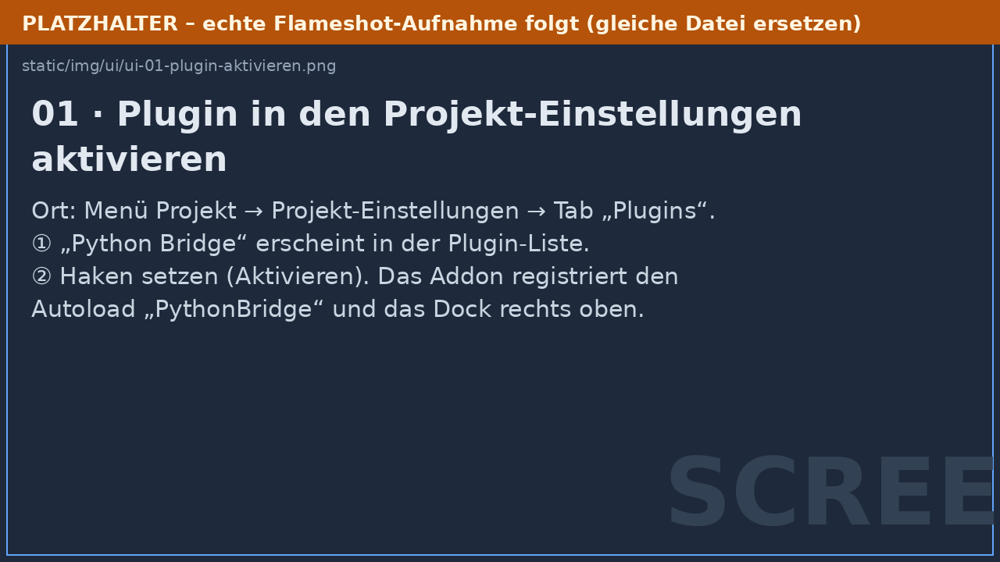
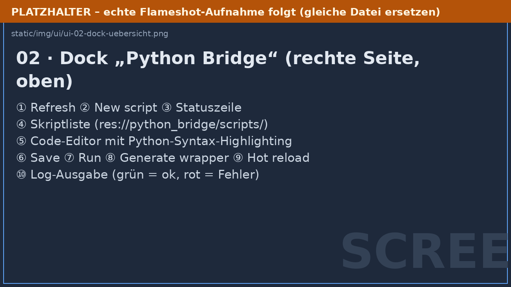
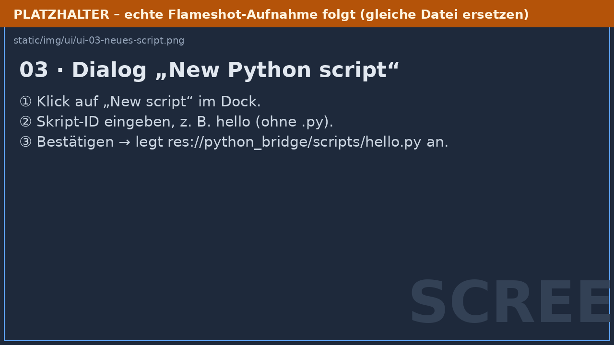
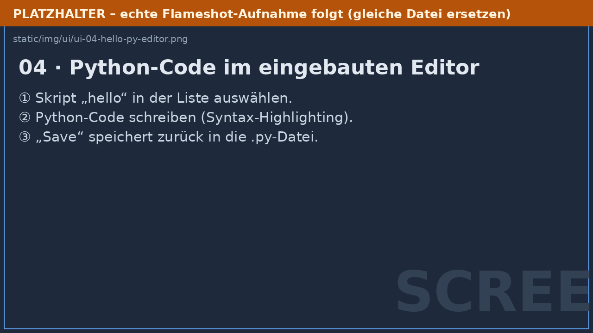
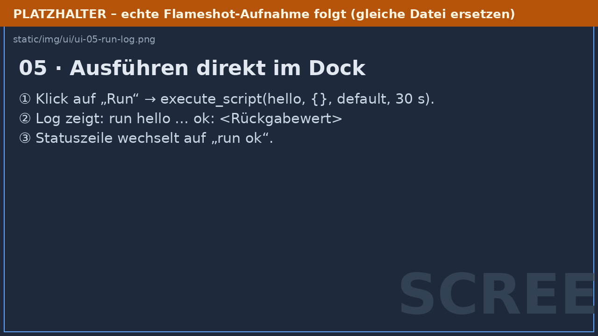
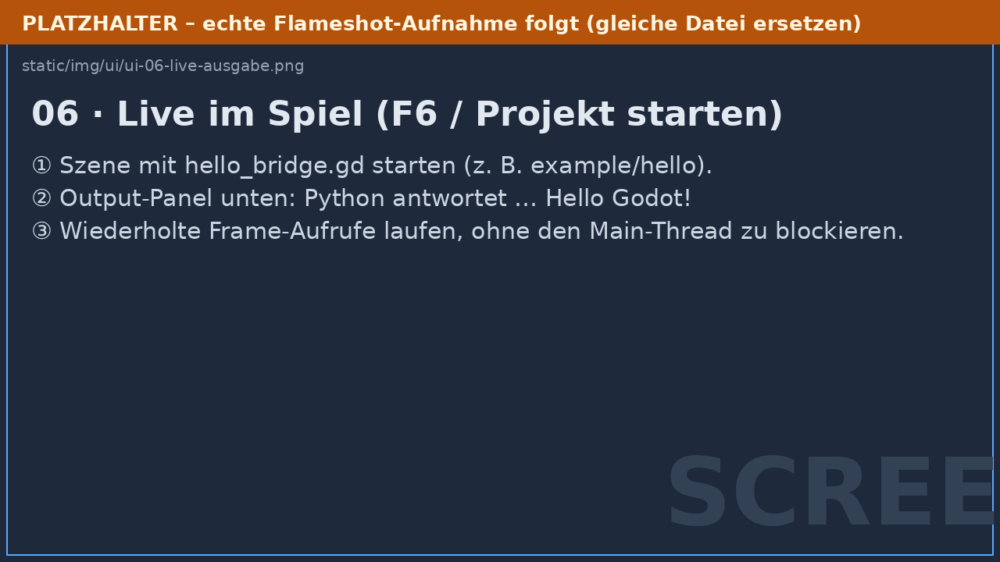
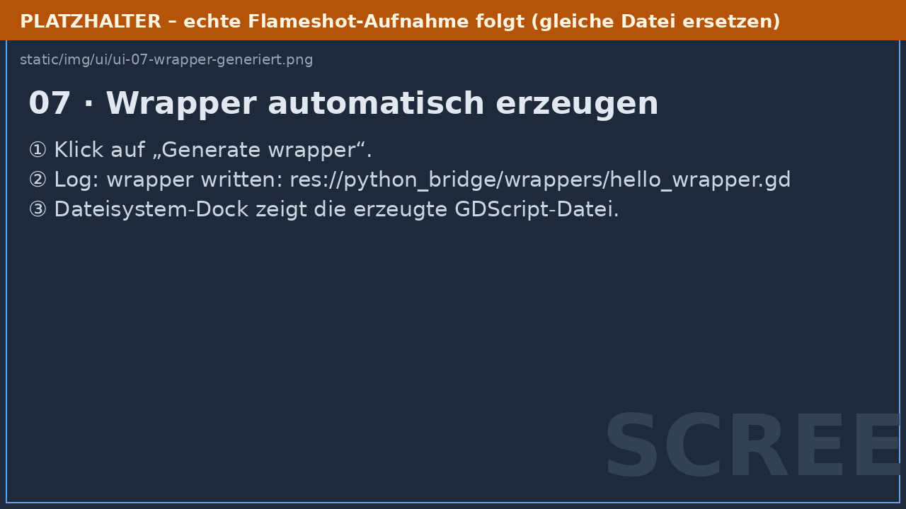
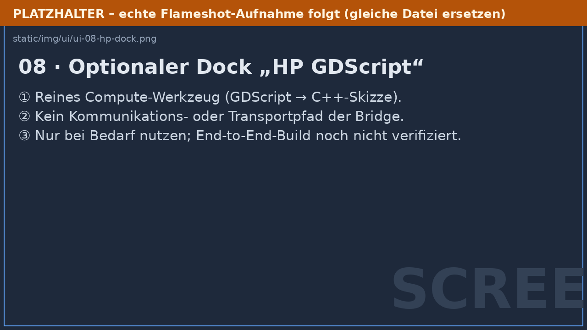

Willkommen bei Python Bridge
Python Bridge verbindet Godot 4 mit Python – ohne Python in eine eigene
Sprache zu verwandeln. Du schreibst weiterhin normale .py-Dateien,
GDScript bleibt deine Godot-Schnittstelle, und die Bridge übernimmt die
gesamte technische Infrastruktur dazwischen:
- Start, Überwachung und kontrolliertes Beenden von Python-Prozessen
- asynchrone WebSocket-Kommunikation (Godot blockiert nie auf Python)
- Parameter gehen als Werte an Python, Return-Werte kommen strukturiert zurück – bei großen Datenmengen als binäre Blöcke bzw. über Dateien (DataRefs), nicht über einen gemeinsamen RAM-Bereich
- strukturierte Ergebnisse und Fehler (Exception-Typ, Message, Traceback)
- Task-Verwaltung: Queue, Prioritäten, Timeouts, Retry, Batching
- Frame-Synchronisation: Antworten werden kontrolliert pro Frame abgearbeitet
- mehrere Python-Instanzen und getrennte Python-Kontexte
- projektbezogene Python-Umgebung (
venv) mit automatischer Einrichtung - Hot Reload für Python-Code
- Python-Editor-Dock direkt im Godot-Editor
- optionale automatische GDScript-Wrapper
- DataRefs plus binärer bzw. dateibasierter Transport für große Daten
- Cluster: Aufgaben auf andere PCs im LAN verteilen (Discovery, verschlüsselte Verbindung, Datei-Transfer, Ausfallbehandlung) – siehe Cluster
Die wichtigste Regel
Godot wartet nie blockierend auf Python – und Python wartet nie auf einen Godot-Frame.
Alle Aufrufe sind asynchron: Du await-est ein Ergebnis, während der
Godot-Main-Thread frei weiterläuft.
Wer startet Python?
Godot startet Python selbst – du musst im Terminal nichts starten. Beim
ersten PythonBridge.start_instance("default") passiert automatisch:
- Python-Interpreter suchen (Details: Installation),
- eine projektbezogene
venvim Workspace anlegen (falls nicht vorhanden), - benötigte Pakete installieren (
websocketsu. a.), - den Bridge-Server-Prozess starten,
- den lokalen WebSocket-Kanal öffnen und per Handshake verbinden.
Die Python-Datei res://python_bridge/scripts/hello.py ist eine ganz
normale Python-Datei: Du kannst sie außerhalb von Godot mit jedem Python
öffnen und ausführen.
Begriffe (Glossar)
Damit die weiteren Kapitel eindeutig sind, hier die wichtigsten Begriffe:
| Begriff | Bedeutung |
|---|---|
| PythonBridge (Autoload) | Der globale Singleton (PythonBridge), deine einzige GDScript-Schnittstelle. Alle Funktionen sind await-bar. |
| Instanz | Ein Python-Prozess + ein WebSocket-Kanal. Benannt (default, worker-a, …). Mehrere Instanzen laufen parallel. |
| Task | Eine Arbeitseinheit („run“ / „call“ / „define“). Durchläuft QUEUED → RUNNING → COMPLETED/FAILED/CANCELLED/TIMEOUT. |
| Kontext (Context) | Ein persistenter Python-Namespace innerhalb einer Instanz (erkennbar an einer Context-ID). Skripte erhalten den Kontext script:<pfad>. |
| Skript | Eine normale .py-Datei unter <workspace>/scripts/. Wird gecacht und nur bei Änderung neu übertragen. |
| Wrapper | Automatisch generierte GDScript-Klasse, die eine Python-Datei als PyBridge<Name> verfügbar macht. |
| Workspace | Projektordner res://python_bridge/ mit scripts/, wrappers/, venv/, tmp/, config/. |
| DataRef | Leichtgewichtiges Handle auf einen großen Datensatz, der im Python-Prozess liegt – die Daten selbst werden erst bei Bedarf geholt. |
| Hot Reload | Python-Code-Änderung gezielt in die laufende Instanz übernehmen, ohne den Godot-Zustand anzutasten. |
| Frame-Sync | Ergebnisse werden nicht unkontrolliert in Nodes geschrieben, sondern im Sync-Punkt pro Frame mit Budget abgearbeitet. |
| Batching | Mehrere kurz aufeinanderfolgende, kompatible Tasks werden zu einer Nachricht zusammengefasst (max. 32 Tasks / 32 ms Fenster). |
Was du damit bauen kannst
- verteiltes Rechnen: viele Aufgaben auf mehrere PCs im LAN verteilen (Cluster)
- numerische Berechnungen und Simulationen
- Datenaufbereitung, Data Engineering
- KI-/ML-Workflows (NumPy, PyTorch, …)
- Punktwolken, Matrizen, große Arrays (über DataRefs)
- Editor- und Entwicklungswerkzeuge
Systemanforderungen
Plattformen
- Linux, Windows, macOS (Desktop)
Software
| Voraussetzung | Details |
|---|---|
| Godot | 4.2 oder neuer; dieses Projekt wurde mit 4.7.2 verifiziert (auch als Flatpak) |
| Python | 3.8 oder neuer; gesucht in dieser Reihenfolge: ① python_executable-Konfiguration, ② PYTHON_PATH-Umgebungsvariable, ③ PATH-Suche (python, python3, py, …), ④ Plattform-Fallback |
| Schreibzugriff | auf den Workspace (res://python_bridge), damit venv, temporäre Dateien und Skripte angelegt werden können; für exportierte Spiele user:// verwenden |
| Netzwerk | Zugriff auf localhost (WebSocket zwischen Godot und Python) |
| Flatpak-Godot (Linux) | wird erkannt; venv/pip/Server laufen dann über flatpak-spawn --host mit Host-Python |
Verifizierter Stand
Mit der echten Engine verifiziert: 0 GDScript-Kompilierfehler, 193/193
GDScript-Assertions, Autoload + Dock + Plugin (VERIFY: PASS), Live-
Hello-World und die komplette DataRef-Datenebene (36/36 Checks, inkl.
Datei-Transport). Details und Prüfbefehle: Godot-Verifikation.
Dokumentationsweg
- Installation – Addon aktivieren, Voraussetzungen
- Erste Schritte – Hello World mit beiden Seiten
- Bedienung im Editor – das Python-Dock mit Screenshots
- Konfiguration – alle Einstellungen erklärt
- Python-Seite verstehen – was in Python passiert
- Große Daten (DataRefs) – Data-Plane
- Cluster – Aufgaben auf andere PCs verteilen
- Cluster aufsetzen – Hauptrechner und Client verbinden
- Cluster-Sicherheit – Token, TLS, Fingerabdruck
- API-Referenz – jede Funktion dokumentiert
- Fehlerbehebung – Probleme und Fehlercodes
Ausblick (bewusst getrennt): ein zweiter, geplanter Pfad für sehr große lokale Daten über Shared Memory (Kommunikationspfade) – noch nicht Teil des verifizierten Standardwegs.
Für den ausführlichen manuellen Workflow (welcher Node, welcher Code, Schritt für Schritt) liegt im Repository der HANDS-ON-Connect-Guide bereit.
Offline & Druck
Die komplette Dokumentation gibt es zusätzlich als einzelne, druckoptimierte Ausgabe (alle Kapitel in einem Dokument mit Inhaltsverzeichnis und Seitenumbrüchen):
Installation
Diese Anleitung führt dich vom leeren Godot-Projekt bis zur ersten laufenden Python-Instanz. Am Ende kannst du das Hello-World aus Erste Schritte ausführen.
1. Voraussetzungen prüfen
- Godot 4.2+ installiert (dieses Projekt wurde mit 4.7.2 verifiziert)
- Python 3.8+ installiert und grundsätzlich erreichbar. Prüfen:
python3 --version # Linux/macOS
python --version # Windows
Das Addon findet Python selbstständig (Konfiguration python_executable,
Umgebungsvariable PYTHON_PATH, dann PATH-Suche). Falls du Python nicht
im PATH hast, trägst du später in der Konfiguration
einen absoluten Pfad ein.
2. Addon herunterladen und in das Projekt kopieren
Lade die aktuelle Addon-Zip-Datei von den GitHub-Releases herunter:
- Direktlink:
python_bridge_addon.zip
Entpacke sie und kopiere den Ordner addons/python_bridge/ vollständig in
den addons/-Ordner deines Godot-Projekts:
dein_projekt/
├── addons/
│ └── python_bridge/ ← kompletter Addon-Ordner
├── project.godot
└── ...
Das Projekt in diesem Repository hat das Addon bereits unter addons/
liegen – dort ist dieser Schritt schon erledigt.
3. Plugin aktivieren
- Öffne das Projekt im Godot-Editor.
- Menü Projekt → Projekt-Einstellungen.
- Wechsle zum Tab Plugins.
- In der Liste erscheint Python Bridge.
- Setze den Haken in der Spalte Enable (bzw. „Aktivieren“).
Beim Aktivieren registriert das Plugin automatisch:
- den Autoload-Singleton
PythonBridge(res://addons/python_bridge/core/python_bridge.gd) – falls nicht schon im Projekt vorhanden, - das Dock „Python Bridge“ oben rechts im Editor,
- das optionale Dock „HP GDScript“ (reines Compute-Werkzeug, siehe Hochleistungspfade).
Beides siehst du sofort in project.godot:
[autoload]
PythonBridge="*res://addons/python_bridge/core/python_bridge.gd"
[editor_plugins]
enabled=PackedStringArray("res://addons/python_bridge/plugin.cfg")
Erste Aktivierung
Manchmal muss Godot die Dateien einmal neu scannen. Falls das Dock nicht erscheint: Projekt → Neu laden oder den Editor neu starten.
4. Workspace verstehen
Beim ersten Start einer Instanz legt das Addon den Workspace an –
standardmäßig unter res://python_bridge/:
python_bridge/
├── scripts/ ← deine Python-Dateien (normaler .py-Code)
├── wrappers/ ← generierte GDScript-Wrapper (automatisch erzeugt)
├── venv/ ← projektbezogene virtuelle Python-Umgebung (automatisch)
├── tmp/ ← Port-Dateien, Logs (z. B. pip.log), DataRef-Dateien
├── config/ ← kombinierte requirements-Datei
└── bridge/ ← interne Laufzeit-Kopie (nicht anfassen)
Du arbeitest praktisch nur mit scripts/ (und optional wrappers/).
venv/, tmp/ und bridge/ werden automatisch verwaltet – nicht
händisch verändern.
5. Erste Instanz starten (Test)
Lege ein minimales Skript an – direkt im Editor über das Python-Dock
(New script, siehe Editor-Bedienung) oder als Datei
res://python_bridge/scripts/hello.py:
def say_hello(message: str) -> str:
return f"Hello Godot! Python received: {message}"
Starte die Instanz dann mit einem winzigen GDScript (an einen beliebigen Node in einer Szene angehängt):
func _ready() -> void:
var started: PythonBridgeResult = await PythonBridge.start_instance("default")
if started.is_error():
push_error("Start fehlgeschlagen: " + started.error_message())
return
print("Instanz bereit: ", PythonBridge.instance_status("default"))
Was beim ersten Start passiert (und warum es dauern kann)
- Python finden – Suche wie oben beschrieben.
- venv anlegen – falls
res://python_bridge/venv/fehlt, wird sie erstellt (Timeout: 300 s). - Pakete installieren –
pip install websockets(+ deine konfigurierten Zusatzpakete). Log:res://python_bridge/tmp/pip.log. - Import-Prüfung – das Addon prüft, ob alle Pakete wirklich importierbar
sind; sonst strukturierter
DEPENDENCY_ERROR. - Server starten –
run_server.pywird als Unterprozess gestartet. - Verbinden – Godot liest die Port-Datei
(
tmp/default.json), öffnet den WebSocket und macht den Handshake.
Erster Start: 1–3 Minuten sind normal. Danach wird der Workspace wiederverwendet und der Start dauert nur noch Sekundenbruchteile.
6. Erwartetes Ergebnis
Die Konsole zeigt Instanz bereit: ready. Fehlt Python oder schlägt ein
Schritt fehl, bekommst du eine strukturierte Fehlermeldung – die
Fehlerkategorien erklärt Fehlerbehebung.
7. Aufräumen
PythonBridge.shutdown() bzw. shutdown_now() beendet alle Instanzen
kontrolliert. Beim Schließen des Editors/der Szene passiert das automatisch
(_exit_tree), sodass keine Python-Prozesse übrig bleiben.
Nächster Schritt
Erste Schritte: Hello World
In diesem Beispiel startet Godot den Python-Prozess selbst, sendet eine Nachricht und gibt die Python-Antwort in der Godot-Konsole aus.
Du brauchst zwei Dateien:
res://scripts/hello_bridge.gd
res://python_bridge/scripts/hello.py
Die Python-Datei bleibt eine normale Python-Datei. Du musst sie nicht vorher im Terminal starten.
0. Alternativ: Mitgeliefertes Beispiel starten
Das Projekt enthält ein lauffähiges Hello-World-Beispiel unter
res://example/hello/ (hello_world.tscn + hello_bridge.gd + hello.py).
Öffne die Szene im Editor und drücke F6 – das Skript kopiert hello.py
selbst in den Bridge-Workspace, startet die Instanz und zeigt die Antwort
in der Konsole. Der manuelle Weg unten erklärt Schritt für Schritt, was
dabei intern passiert.
1. Python-Datei erstellen
Lege die Datei
res://python_bridge/scripts/hello.py
an und füge diesen Code ein:
def say_hello(message: str) -> str:
"""Return a greeting for Godot."""
return f"Hello Godot! Python received: {message}"
Die Funktion nimmt einen String entgegen und gibt einen String zurück.
2. GDScript-Datei erstellen
Lege die Datei
res://scripts/hello_bridge.gd
an:
extends Node
const PYTHON_SCRIPT := "hello"
const PYTHON_INSTANCE := "default"
var _python_ready := false
var _frame_counter := 0
func _ready() -> void:
var started: PythonBridgeResult = await PythonBridge.start_instance(
PYTHON_INSTANCE
)
if started.is_error():
push_error("Python Bridge start failed: " + started.error_message())
return
_python_ready = true
await _send_hello()
func _send_hello() -> void:
var result: PythonBridgeResult = await PythonBridge.call_script(
PYTHON_SCRIPT,
"say_hello",
["Hello Python"],
{},
PYTHON_INSTANCE,
30.0
)
if result.is_ok():
print("[Godot] Python antwortet: ", result.value)
else:
push_error(
"Python task failed [" + result.error_code() + "]: "
+ result.error_message()
)
if result.error.has("traceback"):
push_error(str(result.error["traceback"]))
func _process(_delta: float) -> void:
if not _python_ready:
return
# Beispiel für eine asynchrone periodische Anfrage.
_frame_counter += 1
if _frame_counter % 60 == 0:
_send_frame_update()
func _send_frame_update() -> void:
var payload := {
"frame": _frame_counter,
"time_seconds": Time.get_ticks_msec() / 1000.0
}
var result: PythonBridgeResult = await PythonBridge.execute(
"result = {\"python_says\": \"Hello Godot\", \"received\": input}",
payload,
PYTHON_INSTANCE,
5.0
)
if result.is_ok():
print("[Godot] Frame-Antwort: ", result.value)
else:
push_error("Frame task failed: " + result.error_message())
func _exit_tree() -> void:
# Beendet den Python-Prozess kontrolliert, wenn diese Demo-Szene endet.
PythonBridge.shutdown()
3. Script an einen Node anhängen
- Öffne deine Szene, zum Beispiel
main.tscn. - Wähle den Root-Node aus.
- Klicke auf Attach Script.
- Wähle
res://scripts/hello_bridge.gd. - Speichere die Szene.
- Starte sie mit F6 oder das Projekt mit F5.
Fertig ist eine lauffähige Szene zum Ausprobieren:
res://example/hello/hello_world.tscn (per F6 startbar – sie erledigt den
Sync-Schritt aus Schritt 1 automatisch).
Der Node-Typ ist nicht festgelegt. Für dieses Beispiel funktionieren unter anderem:
NodeNode2DControl
PythonBridge selbst ist ein Autoload und muss nicht an diesen Node angehängt
werden.
4. Erwartete Ausgabe
In der Godot-Konsole sollte ungefähr Folgendes erscheinen:
[Godot] Python antwortet: Hello Godot! Python received: Hello Python
[Godot] Frame-Antwort: { ... }
Beim ersten Start kann die Erstellung der virtuellen Umgebung einige Zeit dauern. Danach wird der vorhandene Python-Workspace wiederverwendet.
5. Was wird gesendet und empfangen?
Dieser Aufruf:
await PythonBridge.call_script(
"hello",
"say_hello",
["Hello Python"],
{},
"default",
30.0
)
bedeutet:
| GDScript | Python |
|---|---|
"hello" |
Datei hello.py |
"say_hello" |
Funktion say_hello |
["Hello Python"] |
Funktionsargument message |
PythonBridgeResult.value |
Rückgabewert von return |
Die Antwort wird nicht direkt in einem Hintergrundthread in einen Node geschrieben. Die Bridge puffert das Ergebnis und übergibt es kontrolliert an den Godot-Main-Thread.
6. Strukturierte Daten senden
Python kann auch Dictionaries zurückgeben:
def describe(value: dict) -> dict:
return {
"python_says": "Hello Godot",
"received": value,
"count": len(value),
}
GDScript ruft die Funktion so auf:
var result: PythonBridgeResult = await PythonBridge.call_script(
"hello",
"describe",
[{"name": "Ada", "language": "Python"}],
{},
"default",
30.0
)
if result.is_ok():
var answer: Dictionary = result.value
print(answer.get("python_says"))
print(answer.get("received"))
7. Python-Fehler behandeln
Python-Ausnahmen werden strukturiert zurückgegeben:
if result.is_error():
print(result.error_code())
print(result.error.get("type", ""))
print(result.error.get("message", ""))
print(result.error.get("traceback", ""))
Damit bleibt die eigentliche Ursache sichtbar und wird nicht durch eine allgemeine Fehlermeldung ersetzt.
Nächste Schritte
- Konfiguration – alle Einstellungen erklärt
- Python-Seite verstehen – Kontexte, Zustand, Abbruch
- Große Daten (DataRefs) – wenn deine Ergebnisse groß werden
- API-Referenz – jede Funktion dokumentiert
- Bedienung im Editor – das Python-Dock
- Installation
- Im Repository:
docs/HANDS_ON_CONNECT_GUIDE.mdfür den ausführlichen manuellen Workflow
Godot-Integration: Bedienung im Editor
Die Python Bridge ist direkt in den Godot-Editor integriert. Du verlässt den Editor nicht: Python-Dateien anlegen, bearbeiten, ausführen und als GDScript-Wrapper verfügbar machen passiert im Dock „Python Bridge“ rechts oben.
Screenshots
Die Bilder dieser Seite sind aktuell Platzhalter – sie werden durch echte
Aufnahmen ersetzt, sobald die Screenshots per Flameshot erstellt und unter
docs-site/static/img/ui/ mit gleichem Dateinamen abgelegt wurden
(Anleitung: docs/Screenshot_Workflow.md). Die beschriebenen Schritte und
Buttons entsprechen exakt dem aktuellen Addon-Code.
1. Plugin aktivieren
 |
① Öffne Projekt → Projekt-Einstellungen → Tab „Plugins“. ② In der Liste erscheint Python Bridge. ③ Setze den Haken (Aktivieren). |
Beim Aktivieren passieren zwei Dinge automatisch:
- Der Autoload-Singleton
PythonBridgewird registriert (addons/python_bridge/core/python_bridge.gd). - Das Dock „Python Bridge“ erscheint oben rechts im Editor.
2. Das Dock im Überblick

Das Dock ist bewusst schlank aufgebaut – es spricht ausschließlich mit der
PythonBridge-Facade, nie mit internen Kernkomponenten.
Warum ein eigener Python-Editor?
Godots eingebauter Script-Editor kann nur GDScript (und C#) bearbeiten –
Python-Dateien kann er nicht öffnen. Der Python-Bereich des Docks ist deshalb
der Ort, um deine .py-Dateien direkt in Godot mit Highlighting zu
schreiben. Alternativ schreibst du die Dateien extern (z. B. VS Code) –
Änderungen werden per Hot Reload übernommen.
Editor-Komfort
Der Code-Editor ist frei skalierbar: Zwischen Skriptliste und Editor sowie
zwischen Editor und Log sitzen ziehbare Trennbalken, und das Dock selbst
lässt sich wie jedes Godot-Dock an der Kante größer ziehen. Das Highlighting
deckt Keywords, Builtins, self/cls, Funktions-/Klassennamen, Decorators,
Zahlen (auch 0x…/0b…/Floats mit Exponent) sowie Strings inklusive
mehrzeiliger Docstrings ab.
| Nr. | Element | Funktion |
|---|---|---|
| ① | Refresh | Skriptliste neu einlesen (res://python_bridge/scripts/) |
| ② | New script | Neues Python-Skript anlegen (Dialog) |
| ③ | Statuszeile | status: scripts: N / run ok / Fehlerstatus |
| ④ | Skriptliste | Alle .py-Dateien des Workspace (Klick öffnet sie) |
| ⑤ | Tabs + Code-Editor | Mehrere Dateien gleichzeitig offen – jeder Tab ist ein eigener Editor mit Python-Syntax-Highlighting und eigener Undo-Historie. Zeilennummern (null-aufgefüllt), 4-Space-Indentation, sichtbare Tabs. Ungespeicherte Änderungen zeigen ein * im Tab; Schließen (X) fragt bei ungespeicherten Änderungen nach. |
| ⑥ | Save | Editor-Inhalt zurück in die .py-Datei schreiben |
| ⑦ | Run | Skript auf Instanz default ausführen (Timeout 30 s) |
| ⑧ | Generate wrapper | GDScript-Anbindung automatisch erzeugen |
| ⑨ | Hot reload | Python-Instanz neu definieren (Code-Änderung) |
| ⑩ | Log | Ausgaben: grün = ok, rot = Fehler, blau = Hinweise |
Der Standard-Workspace liegt unter res://python_bridge/:
Skripte in res://python_bridge/scripts/, generierte Wrapper in
res://python_bridge/wrappers/.
3. Ein Python-Skript anlegen

- Klick auf New script ①.
- Skript-ID eingeben – z. B.
hello, ohne.py②. - Bestätigen ③ → die Datei
res://python_bridge/scripts/hello.pywird mit einem Kommentar-Kopf angelegt.

- Das Skript erscheint in der Liste; ein Klick darauf ① öffnet es in einem neuen Tab (mehrere Skripte können gleichzeitig offen sein).
- Schreibe normalen Python-Code – z. B.:
def say_hello(message):
print("Python received:", message)
return "Hello Godot! " + message
- Save schreibt die Datei zurück ② ③. Wichtig: Es bleibt eine echte,
normale
.py-Datei – außerhalb von Godot mit jedem Python lauffähig.
4. Skript ausführen (im Dock)

- Klick auf Run ①. Das Dock ruft
execute_script("hello", {}, "default", 30.0)auf. - Das Log zeigt den Ablauf ②:
run hellook: Hello Godot! Python received: …(grün)
- Die Statuszeile wechselt auf
run ok③.
Fehler werden nicht verschluckt: Bei einer Python-Exception erscheinen Status, Fehlermeldung und – falls vorhanden – der Traceback rot im Log.
5. Live im Spiel testen (F6/F5)

Der Dock-„Run“ führt das Skript einmalig aus. Für Live-Nutzung im
Spielbetrieb hängst du ein GDScript an einen Node, das die Facade aufruft –
z. B. das lauffähige Beispiel example/hello/hello_world.tscn:
extends Node
func _ready() -> void:
var started := await PythonBridge.start_instance("default")
if not started:
return
var res := await PythonBridge.call_script("hello", "say_hello", ["Hello Python"])
if res and res.is_ok():
print("[Godot] Python antwortet:", res.value)
- F6 auf der Szene (bzw. F5 fürs Projekt) startet den Test.
- Das Output-Panel unten zeigt die Antwort aus Python ①.
- Auch wiederholte Aufrufe pro Frame (
execute()in_process) laufen, ohne den Main-Thread zu blockieren ②.
6. GDScript-Wrapper automatisch erzeugen

- Klick auf Generate wrapper ①.
- Das Addon liest die Python-Funktionen per
introspect_scriptund schreibt eine GDScript-Anbindung nachres://python_bridge/wrappers/<skript>_wrapper.gd②. - Die Datei erscheint im Dateisystem-Dock ③ und ist über den Dateinamen eindeutig als generiert erkennbar.
Sicherheitsregel: Eine manuell geschriebene Datei an gleicher Stelle wird niemals überschrieben – das Addon bricht mit einer Fehlermeldung im Log ab.
7. Optional: Dock „HP GDScript“

Neben dem Python-Dock registriert das Plugin einen zweiten Dock: HP GDScript ①. Er ist ein reines Compute-Werkzeug (GDScript → C++- Skizze über den gebündelten GDScript2All-Konverter) und kein Kommunikationsweg der Bridge ②. Für die normale Arbeit mit Python ist er nicht nötig; sein End-to-End-Build ist noch nicht verifiziert ③.
Zusammenfassung des Workflows
Plugin aktivieren (Projekt-Einstellungen → Plugins)
↓
Dock „Python Bridge“ öffnen (rechts oben)
↓
New script → Python schreiben → Save (echte .py-Datei)
↓
Run im Dock oder call_script aus GDScript (Live-Szene, F6)
↓
Generate wrapper → *.gd in wrappers/ (optional)
Mehr Kontext zur Architektur und zu den Grenzen findest du unter Architektur.
Konfiguration
Die Bridge wird komplett über eine zentrale Konfiguration gesteuert. Du
übergibst ein Dictionary an PythonBridge.configure() – alle nicht genannten
Schlüssel behalten ihre Standardwerte.
Wann konfigurieren?
Vor dem ersten start_instance(). Die Instanz übernimmt beim Start eine
Momentaufnahme der Einstellungen. Sinnvoll ist ein kleiner Bootstrap-Node,
dessen _ready() als Erstes läuft, oder ein eigenes Autoload-Skript:
extends Node
func _ready() -> void:
PythonBridge.configure({
"workspace_dir": "user://python_bridge", # z. B. für exportierte Spiele
"python_executable": "/usr/bin/python3", # nur nötig, wenn nicht im PATH
"dependencies": ["numpy"],
"data_ref_threshold_bytes": 8 * 1024 * 1024,
})
PythonBridge.start_instance("default")
configure() merged über die Standardwerte: fehlende Schlüssel fallen auf
die Defaults zurück, unbekannte Schlüssel werden toleriert (vorwärtskompatibel).
Aktuelle Werte liest du mit PythonBridge.config() (Kopie).
Referenz aller Schlüssel
Allgemein
| Schlüssel | Default | Bedeutung |
|---|---|---|
workspace_dir |
"res://python_bridge" |
Ablage für Skripte, Wrapper, venv, tmp. Für exportierte Spiele auf einen beschreibbaren Pfad setzen (z. B. user://python_bridge). |
python_executable |
"" |
Expliziter Python-Pfad. Leer = automatische Suche (Reihenfolge: dieser Schlüssel → PYTHON_PATH → PATH → Plattform-Fallback). |
dependencies |
[] |
Zusätzliche Pakete, die in die venv installiert werden (zusätzlich zu websockets). Beispiel: ["numpy"]. |
autostart |
false |
Wenn true, startet die Instanz default automatisch, sobald der Autoload im Baum ist. Für kontrollierte Projekte lieber false lassen und explizit starten. |
Tasks, Queue & Timeouts
| Schlüssel | Default | Bedeutung |
|---|---|---|
max_queued_tasks |
1000 |
Backpressure: maximale Anzahl wartender Tasks. Danach lehnt submit neue Tasks ab (TASK_ERROR). |
max_inflight_per_instance |
1 |
Maximale gleichzeitig offene Einheiten pro Instanz (ein Batch zählt als eine Einheit). Für Parallelität zusammen mit workers_per_instance erhöhen. |
workers_per_instance |
1 |
Worker-Threads im Python-Prozess. Tasks verschiedener Kontexte laufen parallel, gleiche Kontexte strikt seriell. Hinweis: reine CPU-Python-Last skaliert wegen des GIL nur über mehrere Prozesse. |
task_timeout_ms |
30000 |
Ausführungs-Timeout eines Tasks, gemessen ab RUNNING. |
queue_timeout_ms |
60000 |
Maximale Wartezeit auf einen Worker-Slot (QUEUED). 0 = unbegrenzt. |
max_payload_bytes |
64 MiB |
Obergrenze der geschätzten Task-Payload (Argumente + Source). |
max_result_bytes |
256 MiB |
Obergrenze einer Ergebnis-Nachricht (inkl. eingebetteter Chunks). |
max_stdout_bytes |
1 MiB |
Wie viele Bytes print()-Ausgabe eines Tasks erfasst werden; Rest wird verworfen und als truncated markiert. |
max_stderr_bytes |
1 MiB |
Wie oben für stderr. |
max_retries |
0 |
Wie oft ein Task nach Fehlschlag erneut eingereiht wird. Default: keine Retries. |
retry_policy |
"connection_error" |
Welche Fehler retry-fähig sind: none | connection_error | process_error | all. |
retry_delay_ms |
250 |
Wartezeit vor einem Retry. |
runaway_grace_ms |
10000 |
Watchdog: Läuft ein per Timeout abgebrochener Job danach weiter (Thread nicht killbar), beendet sich der Prozess selbst und wird über die Restart-Policy neu gestartet. 0 = deaktiviert. |
Batching
| Schlüssel | Default | Bedeutung |
|---|---|---|
max_batch_size |
32 |
Maximale Tasks pro Batch-Nachricht. |
max_batch_delay_ms |
32 |
Fenster, in dem eintreffende Tasks gesammelt werden, bevor ein Batch losgeschickt wird. |
Batching greift nur für kompatible, batchbare Tasks auf dieselbe Instanz;
execute() (temporärer Code) ist bewusst nicht batchbar. Erscheint ein
höherpriorer Task, wird das Fenster sofort geschlossen.
Frame-Synchronisation (Godot-Main-Thread)
| Schlüssel | Default | Bedeutung |
|---|---|---|
max_dispatch_per_frame |
16 |
Maximal verschickte Task-Einheiten pro Frame. |
max_results_per_frame |
64 |
Maximal pro Frame an Tasks ausgehändigte Ergebnisse. |
max_inbox_size |
512 |
Puffergrenze für eingehende Antworten. Ist die Inbox voll, wird der Dispatch gedrosselt (Backpressure). |
max_decode_bytes_per_frame |
16 MiB |
Wie viele eingehende Bytes pro Frame dekodiert werden. Große Antworten verteilen sich so über mehrere Frames – kein Frame-Stall. |
Datenebene (DataRefs)
| Schlüssel | Default | Bedeutung |
|---|---|---|
data_ref_threshold_bytes |
16 MiB |
numpy-Ergebnisse ab dieser Größe werden nicht direkt übertragen, sondern als DataRef-Handle gehalten. 0 = deaktiviert (direkter Transfer). |
file_read_bytes_per_frame |
16 MiB |
Bytes pro Frame, die bei einer dateibasierten DataRef gelesen werden (FileAccess, chunkweise). |
Verbindung & Provisioning
| Schlüssel | Default | Bedeutung |
|---|---|---|
connect_timeout_ms |
20000 |
Timeout für den WebSocket-Aufbau nach Prozessstart. |
shutdown_timeout_ms |
3000 |
Wartezeit auf die SHUTDOWN-Bestätigung, bevor der Prozess erzwungen beendet wird. |
provision_venv_timeout_ms |
120000 |
Reserviert – der Provisioner erzwingt intern aktuell ein festes Limit von 300 s. |
provision_pip_timeout_ms |
300000 |
Reserviert – siehe oben. |
Health-Monitoring
| Schlüssel | Default | Bedeutung |
|---|---|---|
health_check_interval_ms |
5000 |
Ping-Intervall an den Python-Prozess. |
health_missed_pong_limit |
3 |
Anzahl verpasster Pongs, nach denen die Instanz als abgestürzt behandelt und neu gestartet wird. |
Crash & Restart
| Schlüssel | Default | Bedeutung |
|---|---|---|
max_restart_attempts |
3 |
Maximale automatische Neustart-Versuche nach einem Crash. |
restart_base_delay_ms |
500 |
Basis-Verzögerung des ersten Neustarts. |
restart_backoff_factor |
2 |
Exponentieller Faktor (0,5 s → 1 s → 2 s …). |
stable_uptime_ms |
30000 |
Nach so langer fehlerfreier Laufzeit wird der Neustart-Zähler zurückgesetzt. |
Hot Reload
| Schlüssel | Default | Bedeutung |
|---|---|---|
hot_reload_mode |
"reload_context" |
none (aus) | reload_context (nur der betroffene Python-Kontext wird neu definiert; Standard) | restart_instance (ganzer Prozess wird neu gestartet). |
Editor / Wrapper (reserviert)
| Schlüssel | Default | Bedeutung |
|---|---|---|
auto_generate_wrappers |
false |
Reserviert – Wrapper werden derzeit explizit über den Dock-Button „Generate wrapper“ erzeugt. |
wrapper_dir |
"res://python_bridge/wrappers" |
Reserviert – Wrapper werden derzeit unter <workspace_dir>/wrappers/ abgelegt. |
Typische Konfigurationsprofile
Standard (Entwicklung)
PythonBridge.configure({}) # alles Default
Mit NumPy und 2 Worker-Threads
PythonBridge.configure({
"dependencies": ["numpy"],
"workers_per_instance": 2,
"max_inflight_per_instance": 2,
"data_ref_threshold_bytes": 8 * 1024 * 1024,
})
Exportierte Spiele (beschreibbarer Workspace)
PythonBridge.configure({
"workspace_dir": "user://python_bridge",
"autostart": true,
})
Robust gegen Verbindungsabbrüche
PythonBridge.configure({
"max_retries": 2,
"retry_policy": "all",
"retry_delay_ms": 500,
})
Cluster-Einstellungen
Eigene Konfiguration – nicht `PythonBridge.configure`
Alles oben gilt für die lokale Bridge (PythonBridge.configure). Das
Cluster-Modul hat eine eigene Konfiguration; die Schlüssel unten setzt man
mit ClusterManager.configure(...) (vor oder nach add_child).
Schlüssel wie max_retries gibt es in beiden – sie bedeuten dort aber
nicht dasselbe.
cluster.configure({
"cpu_block_pct": 90.0, # früher sperren
"queue_capacity": 12, # mehr gleichzeitige Aufgaben annehmen
"tls_allow_self_signed": true, # selbstsignierte Zertifikate erlauben
"max_retries": 3, # Wiederholungen je Aufgabe
})
Unbekannte Schlüssel werden ignoriert (vorwärtskompatibel), Werte werden
begrenzt: unresponsive_ms liegt immer über heartbeat_interval_ms, und die
READY-Schwelle kann die BLOCK-Schwelle nicht überschreiten – sonst gäbe es
keine Hysterese.
Nicht über configure() laufen die Node-Einstellungen des
ClusterManager – die stehen im Inspektor (oder als @export):
| Feld | Standard | Bedeutung |
|---|---|---|
auto_discover |
true |
Rechner automatisch per Broadcast suchen. |
discovery_port |
8766 |
UDP-Port der Suche. |
auto_connect |
true |
Gefundene Rechner sofort verbinden. |
worker_token |
"" |
Token für Rechner, die keins im Beacon mitsenden. |
tls_allow_self_signed |
false |
Selbstsignierte Zertifikate erlauben (siehe unten). |
tls_ca_path |
"" |
Angeheftetes Zertifikat (PEM) für alle Rechner. |
mirror_scene |
false |
Legt einen Kind-Node ClusterMirror an, darunter je Rechner Worker_<id> und je Aufgabe Task_<id>. Der jeweilige Zustand steht als get_meta("cluster") bereit – so lässt sich der Cluster wie ein normales Node-System abfragen. |
state_path |
user://cluster_workers.json |
Wo gemerkte Rechner und Token liegen. |
Erreichbarkeit
| Schlüssel | Standard | Bedeutung |
|---|---|---|
heartbeat_interval_ms |
2000 |
Abstand der Lebenszeichen des Workers. |
unresponsive_ms |
6000 |
Ohne Lebenszeichen so lange → Rechner wird UNRESPONSIVE. |
disconnected_ms |
20000 |
Danach gilt die Verbindung als getrennt. |
Kapazität (Capacity Gate)
| Schlüssel | Standard | Bedeutung |
|---|---|---|
queue_capacity |
8 |
Wie viele Aufgaben ein Rechner gleichzeitig annehmen darf. |
cpu_block_pct |
85.0 |
Ab dieser CPU-Last sperrt der Rechner (BLOCKED). |
cpu_ready_pct |
70.0 |
Darunter ist er wieder READY (Hysterese). |
ram_block_pct |
90.0 |
Wie cpu_block_pct, für den Arbeitsspeicher. |
ram_ready_pct |
75.0 |
Wie cpu_ready_pct, für den Arbeitsspeicher. |
Laufende Aufgaben werden nie abgebrochen, nur weil ein Rechner gesperrt wird.
Aufgaben, Versuche, Zuweisung
| Schlüssel | Standard | Bedeutung |
|---|---|---|
task_timeout_ms |
120000 |
Obergrenze für eine Aufgabe im Manager. |
max_retries |
2 |
Zusätzliche Versuche je Aufgabe. |
retry_delay_ms |
500 |
Wartezeit vor einem erneuten Versuch. |
ack_timeout_ms |
10000 |
So lange darf die Quittung des Workers dauern. |
max_dispatch_per_tick |
8 |
Höchstens so viele Startversuche je Durchlauf. |
max_payload_bytes |
3145728 (3 MB) |
Obergrenze eines Auftrags (Projekt/Code als Text). |
Routing (Router-Gewichte)
| Schlüssel | Standard | Bedeutung |
|---|---|---|
router_locality_bonus |
60.0 |
Vorteil, wenn die Datei schon auf dem Rechner liegt. |
router_latency_penalty_per_ms |
0.5 |
Abzug je Millisekunde Latenz. |
router_load_weight |
1.0 |
Gewicht der Auslastung. |
Höherer Wert = stärkerer Einfluss. Größerer router_locality_bonus schickt
Aufgaben lieber dorthin, wo die Daten schon liegen (siehe Cluster).
Sicherheit
| Schlüssel | Standard | Bedeutung |
|---|---|---|
worker_token |
"" |
Shared Secret. Wird für die Discovery automatisch übernommen; im Beacon steht es nur mit Auto-Pair. Taucht nicht in describe() auf. |
tls_ca_path |
"" |
Angeheftetes Zertifikat (PEM) → echte Prüfung. |
tls_allow_self_signed |
false |
Selbstsignierte Zertifikate bewusst erlauben. Standard aus – deshalb scheitert die erste wss://-Verbindung sichtbar, bis das Häkchen gesetzt oder ein Zertifikat angeheftet ist. |
Details zu schwierigen Schlüsseln
max_inflight_per_instance + workers_per_instance: Beide steuern
Parallelität. workers_per_instance bestimmt die Threads im Python-Prozess,
max_inflight_per_instance bestimmt, wie viele Task-Einheiten Godot
gleichzeitig offen hält. Für echte Parallelität beide erhöhen (z. B. beide
auf 4). Gleiche Python-Kontexte bleiben trotzdem seriell – das garantiert
deterministischen Modulzustand.
max_retries: Standardmäßig 0. Erst wenn du Retries aktivierst
(max_retries > 0), werden fehlgeschlagene Tasks gemäß retry_policy
wieder eingereiht. Python-Fehler (PYTHON_EXCEPTION) sind nie retry-fähig –
nur Verbindungs-/Prozessfehler je nach Policy.
Python-Seite verstehen
Du schreibst normales Python. Damit du aber genau weißt, was wann läuft und wo Zustand bleibt, erklärt diese Seite die Ausführungs-Semantik der Bridge.
Ein Kontext pro Skript
Jede Python-Instanz hält Kontexte: persistente Namespaces. Ein Skript
hello.py läuft im Kontext script:res://python_bridge/scripts/hello.py.
Das hat drei praktische Konsequenzen:
- Modul-Zustand bleibt erhalten. Variablen, Importe und Klassen auf
Modulebene überleben zwischen mehreren
call_script-Aufrufen. - Mehrere Skripte stören sich nicht. Jedes Skript hat seinen eigenen Namespace.
- Der Kontext wird nur bei Änderung neu geladen. Die Bridge vergleicht den SHA-256-Hash des Sources. Unveränderter Code wird nicht erneut übertragen und nicht erneut definiert.
# counter.py – der Zähler bleibt über Aufrufe hinweg erhalten
_counter = 0
def increment(step: int = 1) -> dict:
global _counter
_counter += step
return {"counter": _counter}
await PythonBridge.call_script("counter", "increment", [], {}, "default", 10.0) # {"counter": 1}
await PythonBridge.call_script("counter", "increment", [], {}, "default", 10.0) # {"counter": 2}
Gut zu wissen
Der Namespace heißt intern __pybridge__ (nicht __main__). Ein
if __name__ == "__main__":-Block wird deshalb nicht ausgeführt.
Die drei Ausführungsarten
| Godot-Aufruf | Python-seitig | Wann? |
|---|---|---|
call_script(id, fn, args) |
call – definiert Kontext nur bei Änderung, ruft dann fn(*args, **kwargs) |
Standard für Funktionen aus Dateien |
execute_script(id, input) |
run – führt die Datei bei jedem Aufruf neu aus; Variablen input/result |
Skript als „Programm“, Modul-Zustand bleibt trotzdem |
execute(code) |
run im frischen Kontext temp-N |
Kurzlebigen Code, kein Zustand gewollt |
define_script(id) |
define – führt die Datei einmal aus, ruft nichts auf | Initialisierung/Vorbereitung |
Beim run-Stil gilt die input/result-Konvention:
# datum.py – wird mit execute_script("datum", {...}) aufgerufen
import datetime
result = {
"eingabe": input,
"heute": str(datetime.date.today()),
}
Beim call-Stil ist die Funktion die Schnittstelle – Argumente kommen
positional oder als Keywords, der return-Wert ist das Ergebnis.
Funktionen schreiben
- Type-Hints sind optional und nur Dokumentation – sie werden nicht erzwungen und nicht zur Laufzeit geprüft.
- Default-Werte gehören nach Python. Der generierte GDScript-Wrapper erkennt sie und lässt sie weg, wenn du sie nicht übergibst (Python bleibt autoritativ).
- Python akzeptiert beliebige Argumentarten, die der Wrapper über
*args/**kwargs-Strukturen korrekt weiterreicht (posonly, varargs, kwonly,**kwargs).
def berechne(a: float, b: float = 2.0, *, faktor: float = 1.0) -> float:
"""Multipliziert a und b und skaliert mit faktor."""
return (a * b) * faktor
# b defaultet auf Python-Seite (2.0); faktor als Keyword
var r := await PythonBridge.call_script(
"rechnen", "berechne", [3.0], {"faktor": 10.0})
Fehler und Tracebacks
Tritt in Python eine Exception auf, stirbt nichts: Der Prozess bleibt leben, der Task endet strukturiert fehlgeschlagen.
if r.is_error():
print("Code: ", r.error_code()) # PYTHON_EXCEPTION
print("Typ: ", r.error.get("type")) # z. B. ValueError
print("Meldung: ", r.error.get("message"))
print("Traceback:", r.error.get("traceback")) # vollständig, inkl. <bridge:...>-Zeilen
Im Traceback siehst du Zeilen wie
File "<bridge:script:res://.../rechnen.py>", line 3, in berechne – der
Dateiname verrät den Kontext, in dem der Code lief.
Ausgaben (print) – ehrlich erklärt
print() und stderr deines Codes werden serverseitig erfasst und
begrenzt (max_stdout_bytes/max_stderr_bytes, Default je 1 MiB; bei
Überschreitung wird der Rest verworfen und als „truncated“ markiert).
Derzeit werden diese erfassten Ausgaben aber nicht automatisch in die Godot-Konsole durchgereicht. Wenn du etwas im Godot-Output sehen willst:
- gib Werte per
returnzurück undprint()-e sie in GDScript, oder - logge sie selbst (z. B. über
bridge_event-fähige Rückgaben, falls du eigene Events baust).
Ein print() in Python ist also eher zum Debuggen im Log des Python-Servers
nützlich als für die Godot-Konsole.
Lange Aufgaben abbrechen (kooperativ)
Ein Python-Thread lässt sich nicht sicher von außen killen. Deshalb gibt es zwei Ebenen:
- Kooperative Cancellation (Standard). In jedem Kontext liegt ein
Helfer
__bridge__:
def lange_rechnung(n: int) -> int:
total = 0
for i in range(n):
__bridge__.checkpoint() # wirft intern, sobald CANCEL eingetroffen ist
total += i
return total
# Alternative ohne Exception: Schleife beenden und Teilergebnis liefern
def mache_etwas(limit: int) -> int:
i = 0
while i < limit and not __bridge__.cancel_requested():
tu_arbeit(i)
i += 1
return i
Bricht Godot den Task ab (cancel_task bzw. Timeout), endet der Task
strukturiert mit status = cancelled / TASK_ERROR (CancelledError).
Wirf keine eigene Exception als „Abbruch“ – das wäre ein normaler
Python-Fehler (PYTHON_EXCEPTION). Nutze checkpoint() oder prüfe
cancel_requested() und kehre sauber zurück.
- Watchdog (letzte Maßnahme). Ohne Checkpoints läuft der Thread weiter.
Nach dem Timeout gibt es eine Gnadenfrist (
runaway_grace_ms, Default 10 s). Läuft der Job dann immer noch, beendet sich der Python-Prozess selbst und wird gemäß Restart-Policy neu gestartet. Folge: Kontexte dieses Prozesses sind weg und werden beim nächsten Aufruf automatisch wieder aufgebaut (Registry-Selbstheilung) – dein Godot-Zustand bleibt unberührt, aber Python-Modulzustand ist nach so einem Neustart verloren.
Mehrere Instanzen & Parallelität
- Mehrere Instanzen = mehrere Prozesse = echte CPU-Parallelität
(GIL-unabhängig). Starte sie mit eigenen Namen:
start_instance("worker-a"),start_instance("worker-b"). workers_per_instance > 1= mehrere Threads innerhalb eines Prozesses. Davon profitieren I/O-lastige Aufgaben und Bibliotheken, die den GIL freigeben (NumPy, …). Reiner Python-CPU-Code skaliert darüber nicht.- Kontexte sind instanzgebunden: gib bei persistentem Zustand immer
dieselbe Instanz an. Auto-Zuordnung (
instance_id = ""bei raw Tasks) kann zwischen Instanzen wechseln und verliert dann Kontextzustand.
NumPy & schwere Bibliotheken
- Die venv enthält von Haus aus nur
websockets. Zusätzliche Pakete kommen über die Konfiguration:
PythonBridge.configure({"dependencies": ["numpy"]})
(vor start_instance) – oder manuell in die Workspace-venv:
<workspace>/venv/bin/python -m pip install numpy.
- NumPy-Arrays werden zu typisierten Godot-Arrays konvertiert; große
Ergebnisse ab
data_ref_threshold_bytes(Default 16 MiB) werden automatisch zu DataRef-Handles statt direkt übertragen. Details: Große Daten (DataRefs).
Beispiel: komplettes Python-Skript
# analyse.py – persistenter Kontext, numpy, langer Lauf mit Checkpoints
import time
import numpy as np
_data = None # Modulzustand: bleibt zwischen Aufrufen
def prepare(n: int) -> dict:
"""Erzeugt einen Datenpuffer und merkt ihn sich."""
global _data
_data = np.linspace(0.0, 1.0, n)
return {"n": n, "dtype": str(_data.dtype)}
def summe_mit_checkpoints(anzahl: int = 10) -> float:
"""Simulierte lange Rechnung – sauber abbrechbar."""
total = 0.0
for i in range(anzahl):
__bridge__.checkpoint() # reagiert auf CANCEL
time.sleep(0.05)
total += float(np.sum(_data)) if _data is not None else 0.0
return total
await PythonBridge.call_script("analyse", "prepare", [1000])
var r := await PythonBridge.call_script("analyse", "summe_mit_checkpoints", [20], {}, "default", 5.0)
Verwandt: API-Referenz · Große Daten · Konfiguration
Daten, Typen & große Datensätze
Damit du weißt, was zwischen Godot und Python hin- und herwandert und wie große Datenmengen behandelt werden.
1. Typ-Mapping (automatisch)
Kleine, strukturierte Werte reisen als JSON; große homogene numerische Arrays und Bytes reisen als rohe Little-Endian-Binär-Chunks (nie als lange JSON-Zahlenlisten). Kleine numerische Godot-Packed-Arrays werden als JSON-Zahlenlisten kodiert. Die Konvertierung ist automatisch und beidseitig.
| Godot | Python | Hinweis |
|---|---|---|
null |
None |
|
bool |
bool |
|
int |
int |
Godot-Int ist 64 Bit |
float |
float |
|
String |
str |
|
Vector2 / Vector3 / Vector4 |
Liste mit 2 / 3 / 4 Zahlen | (x,y), (x,y,z), (x,y,z,w) |
Color |
Liste mit 4 Zahlen | (r,g,b,a) |
Transform3D |
Liste mit 12 Zahlen | Basis 9 + Ursprung 3 |
Array |
list |
|
Dictionary |
dict |
Schlüssel als String empfohlen |
| – | tuple, set |
kommen als Godot-Array an |
PackedByteArray |
bytes / bytearray |
Binär-Chunk |
PackedFloat32Array |
klein: list aus Zahlen; groß: numpy-float32-Array (sofern NumPy installiert, sonst Rohbytes) |
Große → Binär-Chunk |
PackedFloat64Array |
klein: list; groß: numpy-float64 |
Große → Binär-Chunk |
PackedInt32Array |
klein: list; groß: numpy-int32 |
Große → Binär-Chunk |
PackedInt64Array |
klein: list; groß: numpy-int64 |
Große → Binär-Chunk |
| – | numpy ndarray |
1-D → typisiertes Packed-Array; mehrdimensional → Array von Zeilen |
| – | anderes Objekt | kommt als String (repr) bzw. null an (pyobject/unsupported) |
Große strukturierte Daten sollten nicht in Dictionary/Array-Form durch
JSON wandern – dafür gibt es DataRefs (unten).
2. Die drei Transportwege (automatisch gewählt)
| Größe / Art | Weg |
|---|---|
| kleine Skalare & Strukturen | JSON inline |
| Bytes, Bilder, homogene numerische Arrays | Binär-Chunks (Little Endian, mit nbytes-Validierung) |
| große numpy-Ergebnisse (ab Schwelle) | DataRef-Handle – Daten bleiben im Python-Prozess bzw. liegen als Datei |
3. DataRefs – große Ergebnisse ohne Kopie
Ein numpy-Ergebnis ab data_ref_threshold_bytes (Default 16 MiB) wird
nicht direkt über den WebSocket geschickt. Python meldet nur einen
Deskriptor, Godot erzeugt daraus automatisch einen PythonBridgeDataRef
(Handle). Die Daten werden erst auf deine Anfrage geholt.
var r := await PythonBridge.execute(
"import numpy as np\nresult = np.arange(4_200_000, dtype=np.float32)",
{}, "default", 30.0)
if r.is_ok() and r.value is PythonBridgeDataRef:
var ref: PythonBridgeDataRef = r.value
print(ref.describe()) # {id, kind: ndarray, dtype: float32,
# shape: [4200000], nbytes: 16800000, …}
# Daten holen (mehrfach erlaubt) – bei großen Werten über die Datei,
# sonst über Binär-Chunks:
var mat: PythonBridgeResult = await PythonBridge.materialize_data(ref, 5.0)
if mat.is_ok():
var arr: PackedFloat32Array = mat.value
print(arr[100_000]) # echtes Array, kein Handle mehr
# Freigeben: räumt Speicher (und ggf. die Datei) auf
await PythonBridge.release_data(ref)
Wichtige Regeln
- Mehrfach materialisieren ist erlaubt. Der Handle bleibt gültig, bis du ihn freigibst oder die Instanz endet.
release_dataist deine Pflicht. Danach ist der Handlestale(is_stale()), weitere Materialisierungen liefern einen strukturierten Fehler statt Müll.- Instanz-Ende macht Handles ungültig. Crash, Neustart oder
stop()→ alle Handles dieser Instanz sindstale;materialize_datameldet einen Fehler. Erzeuge in dem Fall einfach ein neues Ergebnis. - Ohne Freigabe räumt der Prozess beim Verbindungs-/Instanzende auf – verlass dich aber nicht darauf, sondern gib bewusst frei.
Was intern passiert (Transparenz)
- Python hält die Daten im
DataStoreund meldet den Deskriptor. materialize_datasendetdata_getmitwant: "file". Für große Datensätze schreibt der Server eine Datei<workspace>/tmp/data/data-<tag>-<id>.bin(mit SHA-256 im Deskriptor) und liefert nur Pfad/Größe/Hash – die Daten wandern nicht über den WebSocket.- Godot liest die Datei chunkweise per Frame (Budget:
file_read_bytes_per_frame, Default 16 MiB), prüft Größe + SHA-256 und dekodiert am Ende in den Zieltyp. Dadurch bleibt der Main-Thread auch bei Hunderten MB ruhig. release_dataentfernt die Datei und gibt den Speicher frei.
Fehler (fehlende/korrupte Datei, Prüfsummen-Mismatch) kommen als
SERIALIZATION_ERROR mit klarer Meldung zurück.
4. Godot → Python: große Daten senden
Auch für den Weg in Python gilt: große Daten nicht als JSON-Liste stecken. Übergib typisierte Packed-Arrays direkt als Argument – kleine werden als JSON-Zahlenliste kodiert, große automatisch als Binär-Chunk:
var big := PackedFloat32Array()
big.resize(1_000_000)
# … füllen …
var r := await PythonBridge.call_script(
"analyse", "nimm_array", [big], {}, "default", 30.0)
def nimm_array(a) -> dict:
# a ist: klein → Python-Liste, groß → numpy-Array (mit NumPy)
# bzw. Rohbytes (Fallback ohne NumPy). np.asarray normalisiert alles:
import numpy as np
arr = np.asarray(a, dtype=np.float32)
return {"n": int(arr.size), "mittel": float(arr.mean())}
Empfehlung: Für numerische Arbeit numpy in die venv installieren
(PythonBridge.configure({"dependencies": ["numpy"]})), damit große Chunks
auf Python-Seite als echte numpy-Arrays ankommen statt als Rohbytes.
Achtung bei Argumentgrößen
max_payload_bytes (Default 64 MiB) begrenzt eine einzelne Task-Nachricht.
Für sehr große Sende-Daten besser in Stücken arbeiten oder das Limit für
deinen Anwendungsfall anpassen (Konfiguration).
5. Ergebnisgrößen-Begrenzungen
| Limit | Default | Wirkung |
|---|---|---|
max_payload_bytes |
64 MiB | Max. Task-Nachricht (Argumente + Source) |
max_result_bytes |
256 MiB | Max. Ergebnis-Nachricht |
data_ref_threshold_bytes |
16 MiB | Ab hier werden numpy-Ergebnisse zu DataRefs |
max_decode_bytes_per_frame |
16 MiB | Decode-Budget pro Frame (Main-Thread-Schutz) |
file_read_bytes_per_frame |
16 MiB | Lese-Budget pro Frame bei Datei-Transport |
max_stdout_bytes / max_stderr_bytes |
1 MiB | Capturing-Grenzen für print()/stderr |
Überschreitet eine Antwort max_result_bytes, kommt ein
SERIALIZATION_ERROR – erhöhe das Limit oder nutze DataRefs. Übersteigt ein
Argument max_payload_bytes, wird der Task schon beim Einreichen
abgelehnt (TASK_ERROR).
Verwandt: Python-Seite verstehen · API-Referenz · Konfiguration
Cluster – Aufgaben auf andere PCs verteilen
Die Python Bridge führt Python lokal in Godot aus. Das Cluster-Modul setzt eine Ebene darüber: dieselben Python-Aufgaben laufen statt auf dem Hauptrechner auf einem anderen PC im selben LAN – ohne Docker, ohne VPN, ohne Router-Konfiguration und ohne dass auf dem Client-Rechner ein Terminal geöffnet werden muss.
Godot + ClusterPanel Client-Rechner
(Du klickst „Aufgabe starten“) (Worker-App, Doppelklick-Start)
│ │
│◄────── Discovery per UDP-Broadcast ──────┤ „ich bin da“
│ │
├──────── Auftrag + Python-Code ──────────►│ Code ankommen
│ (verschlüsselt, wss://) │ Projekt bauen
│◄──────── Status, Fortschritt, Ergebnis ──┤ Ergebnis zurück
Die zentrale Definition
Das Cluster-Modul ist kein neues Python-System. Es ist ein visueller Task- und Daten-Orchestrator für die bestehende Bridge.
Python-Aufgaben bleiben normale Python-Aufgaben. Das Modul entscheidet nur:
- Wo läuft die Aufgabe (welcher Rechner ist verfügbar, hat Kapazität und die nötigen Daten)?
- Welche Dateien braucht dieser Rechner dafür, und liegen sie schon dort?
- Wann darf gestartet werden (erst wenn die Daten geprüft vorliegen)?
- Was passiert bei einem Ausfall (Aufgabe neu bewerten, nicht verlieren)?
Der Code läuft weiterhin in einem normalen Python-Prozess – auf einem anderen Rechner statt auf deinem.
Die zwei Rollen
| Rolle | Rechner | Was läuft dort |
|---|---|---|
| Manager | der Hauptrechner | Godot mit dem Addon, Node ClusterPanel (dunkle Oberfläche) |
| Worker | jeder weitere PC | die Worker-App worker_app.py (Doppelklick, eigenes Fenster) |
Die Worker-App ist ein eigenes kleines Programm im Addon
(addons/python_bridge/orchestrator/worker/). Sie erzeugt ihr Token selbst,
startet den Worker-Prozess und zeigt Status, Log, Aufgabenkarten mit
Fortschrittsbalken und die Diagnose.
So ist es in Godot eingebunden
Das Cluster-Modul ist ein Node, kein Fremdprogramm. Eine Szene mit
ClusterPanel genügt – der Panel bringt seinen eigenen ClusterManager mit:
ClusterPanel (Control) ← fertige Oberfläche (cluster_main.tscn)
└── ClusterManager (Node)
├── Worker(s) automatisch erkannt + verbunden
├── Task(s) Python-Aufgaben inkl. Zustandsautomat
└── Scheduler Router + Dispatcher + Transport
Wer keine Oberfläche braucht, benutzt den Manager direkt. Zwei Dinge sind am Beispiel wichtig zu verstehen:
- Der erste Parameter ist nur der Anzeigename der Aufgabe – kein Dateipfad, den es auf dem Worker geben müsste. Er steht später in der Tabelle und im Protokoll.
- Ausgeführt wird, was in
sourcesteht (oder die übertragene Projektdatei). Der Worker legt dafür ein eigenes Arbeitsverzeichnis an.
var cluster := ClusterManager.new()
add_child(cluster) # startet Discovery und lädt gemerkte Rechner
cluster.task_finished.connect(func(task_id: String, ok: bool, value: Variant, error: String) -> void:
print(task_id, " → ", ok, " ", value, " ", error))
# "mein_lauf" ist der Name; der Code kommt aus "source" mit.
# command "run": der Code liest `input` und setzt `result`.
cluster.submit_script("mein_lauf", {
"command": "run",
"input": {"werte": [1, 2, 3]},
"source": "result = sum(input['werte'])",
})
Für den Alltag gibt es passende Kurzwege – statt Code als Text zu übergeben:
| Aufruf | Was passiert |
|---|---|
submit_project_dir("res://mein_projekt") |
liest den Ordner (nur Textdateien, ohne venv/__pycache__), bestimmt den Einstieg (main.py, app.py, …) und lässt bauen, falls nötig |
submit_script_file("res://scripts/bench.py", {...}) |
eine einzelne Datei als Aufgabe |
submit_with_files({...}, ["res://daten/modell.dat"]) |
Aufgabe plus Eingabedateien; übernimmt Registrierung und Transfer |
cancel_task(task_id) |
bricht Aufgabe und laufenden Datei-Transfer ab |
call statt run: dann wird eine Funktion im Code aufgerufen – dazu function
und optional args/kwargs setzen. input gibt es nur bei run.
Was das Modul übernimmt
| Baustein | Aufgabe |
|---|---|
| LAN-Discovery | UDP-Broadcast: Rechner finden sich selbst. Keine IP, kein Port zum Eintippen. Der Beacon ist nicht verschlüsselt – deshalb ist Auto-Pair eine bewusste Entscheidung (Cluster-Sicherheit). |
| Worker-Transport | WebSocket-Verbindung pro Rechner (wss://), Heartbeat, automatische Wiederverbindung. |
| Capacity Gate | Ein Rechner nimmt nur so viele Aufgaben an, wie seine Grenzen (CPU/RAM/Queue) zulassen. Zustände je Rechner: READY (nimmt an), LIMITED (knapp, nimmt noch an), BLOCKED (gesperrt), UNRESPONSIVE (Heartbeat fehlt), DISCONNECTED. Mit Hysterese: die Freigabe aus BLOCKED kommt erst unter der READY-Schwelle, damit der Zustand nicht flattert. |
| Router | Wählt den passenden Rechner: verfügbar + Kapazität + Ressourcen + Daten schon da (Data Locality). |
| Task-Zustandsautomat | CREATED → QUEUED → ASSIGNED → WAITING_FOR_DATA → RUNNING → COMPLETED/FAILED/RETRYING/CANCELLED. |
| ACK & Wiederzuweisung | Ein Auftrag gilt erst nach Quittung als übertragen. Fällt ein Rechner aus, werden betroffene Aufgaben neu bewertet – abgeschlossene nicht wiederholt. |
| Datei-Registry + Chunk-Transfer | Große Eingaben werden inhaltsadressiert (SHA-256), in 256-KB-Stücken übertragen und vor dem Start geprüft. Schon vorhandene Dateien werden nicht erneut geschickt. |
| Projekte mit Build | Enthält der Ordner .pyx oder requirements.txt, legt der Worker eine isolierte Umgebung an, installiert und kompiliert – im Cache, damit der zweite Lauf sofort startet. |
| TLS | In der Worker-App standardmäßig verschlüsselt (ws:// nur, wenn der Worker von Hand ohne TLS gestartet wird); Zertifikat entsteht automatisch. Siehe Cluster-Sicherheit. |
| Monitoring | CPU, RAM, GPU (optional), Latenz, Queue, aktive Aufgaben – pro Rechner in der Oberfläche. |
Bewusst nicht enthalten
- Kein virtuelles Netzwerk, kein Docker, keine Router- oder Portfreigaben.
- Kein Ersatz für die lokale Instanz: die normale Python Bridge arbeitet unverändert weiter.
- Keine Sandbox: übertragener Code läuft mit den Rechten des Worker-Benutzers.
- Keine ausgleichende Fairness über mehrere Manager: ein Manager steuert die
Rechner, die er kennt. Prioritäten (
LOW/NORMAL/HIGH) gibt es je Aufgabe, sie ordnen nur die Warteschlange innerhalb dieses Managers.
Weiterlesen
- Cluster aufsetzen – Hauptrechner und Client in 5 Minuten
- Cluster-Sicherheit – Token, TLS, Fingerabdruck
- Fehlerbehebung – auch für Cluster und TLS
Ausführliche Fassungen im Repository
Im Addon liegen zusätzlich:
addons/python_bridge/orchestrator/CLUSTER_V1_SETUP.md– Aufsetzen mit Firewall-Tabelle und Fehlersucheaddons/python_bridge/orchestrator/SAFETY.md– Sicherheitsprüfung, Funde, Grenzenaddons/python_bridge/orchestrator/CYTHON_AND_BUILD.md– Build-Schritte, Umgebungen und Cache im Detail
Cluster aufsetzen
Für den Aufbau gibt es genau zwei Schritte: Hauptrechner starten, Client-App starten. Alles andere (Suchen, Verbinden, Code übertragen, Ergebnisse zurückholen) erledigt das System selbst.
1. Hauptrechner einrichten
Das Addon reicht – es ist dieselbe Installation wie bei der lokalen Bridge (Installation). Zwei Wege zur Oberfläche:
Variante A – fertige Oberfläche starten (schnellster Test)
Szene addons/python_bridge/cluster/cluster_main.tscn öffnen und F6
drücken. Es öffnet sich die dunkle Cluster-Oberfläche mit Protokoll und
Rechner-Karten.
Variante B – in die eigene Szene einbauen
cluster_panel.gd auf ein Control legen (oder per Code):
extends Control
const ClusterPanel := preload("res://addons/python_bridge/cluster/cluster_panel.gd")
func _ready() -> void:
var panel := ClusterPanel.new()
panel.set_anchors_preset(Control.PRESET_FULL_RECT)
add_child(panel) # bringt seinen ClusterManager selbst mit
Fertige Signale des Managers:
panel.manager.worker_connected.connect(func(id: String) -> void: print("dabei: ", id))
panel.manager.task_finished.connect(func(id: String, ok: bool, value: Variant, err: String) -> void:
print("fertig: ", id, " ok=", ok, " -> ", value))
2. Client-Rechner einrichten
Auf jedem mitrechnenden PC einmalig:
- Python installieren, falls noch nicht vorhanden (unter Linux zusätzlich
python3-tk, sonst startet die Oberfläche nicht). Das ist die einzige Voraussetzung – Compiler, Cython, Docker, Zusatzpakete sind nicht nötig. - Worker-Paket auf den Rechner kopieren: den Ordner
addons/python_bridge/orchestrator/worker/(aus Addon-ZIP oder Repository) oder das fertigePythonBridge-Worker-*.zipentpacken – aktuelle Version: GitHub-Release. Das Paket ist eigenständig – Godot und das Addon sind auf dem Client nicht nötig. - Starten:
- Windows: Doppelklick auf
Worker-Windows.bat - Linux:
./start_worker_linux.sh
- Windows: Doppelklick auf
- Im Fenster auf Worker starten klicken.
- Wenn Windows beim ersten Start die Firewall-Frage zeigt: Zulassen für „Private Netzwerke“ – der Worker muss Aufgaben entgegennehmen dürfen.
Fertig, wenn das Fenster den grünen Punkt neben „Worker läuft“ zeigt. Der Rechner meldet sich automatisch im Netz und erscheint auf dem Hauptrechner als Worker-Karte.
Beim ersten Verbindungsaufbau braucht TLS eine Freigabe: im Cluster-Fenster „Selbstsignierte Zertifikate erlauben“ anhaken – oder sicherer das Zertifikat über den Knopf Zertifikat an der Worker-Karte anheften (Cluster-Sicherheit). Die Karte zeigt danach „TLS, verschlüsselt“ bzw. „TLS, Zertifikat angeheftet und geprueft“.
Kurz-Check, ob alles steht: Worker-Karte sichtbar → Zustand READY → kleine Aufgabe starten → Status COMPLETED.
Fehlt das Paket `websockets`?
Die Worker-App erkennt das selbst und bietet im Fenster den Knopf „websockets installieren“ an. Ein Klick, kurz warten – kein Terminal nötig.
3. Aufgaben starten
Im Cluster-Fenster:
- Datei oder Projektordner wählen (Rechtsklick-frei, zwei Knöpfe).
- Optional Eingabedateien über den Knopf Dateien anhängen – die Anzeige daneben nennt Anzahl und Gesamtgröße.
- Ausführungsart wählen:
run– der Code liestinputund setztresultcall– eine Funktion im Skript wird mit Argumenten aufgerufen
- Optional Ziel-Rechner wählen („Automatisch“ = der Router entscheidet).
- Aufgabe starten.
Die Tabelle zeigt danach: Name, Status, Fortschritt, Rechner, Versuch, Build und Ergebnis.
- Fortschritt: die Stufe plus Prozent –
detect(Projekt prüfen),env(Umgebung),deps(Abhängigkeiten),build(kompilieren),run(Programm starten). Vor dem Start steht dort „Daten werden uebertragen“; ohne Fortschrittsmeldung „wartet“. - Versuch:
verbraucht/erlaubt, z. B.1/3(ein Versuch, zwei Wiederholungen). - Build:
neu gebautoderCache(unverändertes Projekt wurde nicht neu kompiliert). - Ergebnis: Fehlermeldung bzw. Rückgabe; Maus darüber zeigt den Hinweis aus
der Zeile
Loesung:des Workers.
Der Ablauf im Hintergrund
Task anlegen
│
Router wählt Rechner ──► Dateien dort schon vorhanden?
│ ├─ ja → kein Transfer
│ └─ nein→ Chunk-Transfer + SHA-256-Prüfung
│ (Task steht auf WAITING_FOR_DATA)
▼
Auftrag + Python-Code per wss:// zum Worker
│
Worker: Arbeitsverzeichnis anlegen · Umgebung/Build (bei Bedarf) · ausführen
▼
Status, Fortschritt und Ergebnis zurück → Task COMPLETED
4. Große Eingabedateien
Dateien sind kein Anhang der Nachricht, sondern Teil der Orchestrierung:
- erkannt über den Inhalt (
file_id = SHA-256), nicht über den Pfad, - übertragen in 256-KB-Stücken, jedes Stück quittiert,
- vor dem Start der Aufgabe auf dem Zielrechner geprüft; erst dann wird der Auftrag verschickt,
- ist die Datei schon vorhanden (auch von einem früheren Lauf), findet kein Transfer statt,
- im Programm liegen sie im Arbeitsverzeichnis – und
input["_files"]nennt ihre Namen, damit kein Skript raten muss, wie die Datei hier heißt:
# "_files" = Liste der bereitgestellten Dateinamen im Arbeitsverzeichnis.
# Der Name auf dem Client kann anders sein als in deinem Projekt.
name = (input or {}).get("_files", ["daten.dat"])[0]
with open(name, "rb") as f:
data = f.read()
Grenzen – und welche gerade greift, ist wichtig:
| Grenze | Wo festgelegt | Standard |
|---|---|---|
| Größe einer Eingabedatei | Manager (MAX_FILE_BYTES, fest) |
512 MB |
| Größe pro Datei auf dem Worker | Worker-App: Groesste Eingabedatei (MB) | 512 MB |
| Datei-Cache des Workers gesamt | Worker-App: Datei-Cache gesamt (MB) | 4096 MB |
| Dateien pro Aufgabe | Worker (fest) | 64 |
Inline-source im Auftrag |
Worker (fest) | 2 MB |
input/args/kwargs |
Worker (fest) | 1 MB |
| Ein Auftrag auf der Leitung | Manager max_payload_bytes |
3 MB |
Eine einzelne Datei über 512 MB geht nicht, auch wenn der Worker-Wert höher gesetzt wird – der Manager lehnt sie schon beim Registrieren ab und sagt das im Protokoll. Der Worker prüft dieselbe Größe zusätzlich beim Empfangen. Wird eine Grenze überschritten, steht ein konkreter Satz mit Größe und Limit im Protokoll – kein stilles Scheitern.
Übertragen wird eine Datei nach der anderen; die Fortschrittsbalken laufen deshalb nacheinander, nicht parallel.
5. Netzwerk und Firewall
Zwei Varianten funktionieren ohne jede Einstellung:
- Über Router/WLAN – beide PCs im selben Netz, fertig.
- LAN-Kabel direkt zwischen Hauptrechner und Client – moderne
Netzwerkkarten verhandeln die Verbindung selbstständig (Auto-MDIX), beide
Rechner bekommen automatisch Adressen (169.254.x.x, „Link-Local“). Windows
zeigt an dieser Karte eventuell „Kein Internet“ – das ist hier korrekt und
stört nicht: Die Discovery sendet an
255.255.255.255und erreicht den direkt verbundenen Rechner dadurch immer.
Nicht funktionieren Netze, die Rechner voneinander isolieren: Gast-WLANs mit AP-Isolation oder Netze, in denen ein VPN den Broadcast-Verkehr schluckt. Dann den Rechner von Hand eintragen (siehe unten) oder ein „normales“ Netz nutzen.
Für die Firewall gilt:
| Rechner | Richtung | Protokoll | Port | Wofür |
|---|---|---|---|---|
| Client (Worker) | ausgehend | UDP (Broadcast) | 8766 | „ich bin da“ (Beacon) |
| Client (Worker) | eingehend | TCP | 8765 | Aufgaben, Dateien, Ergebnisse |
| Hauptrechner (Manager) | eingehend | UDP | 8766 | Beacons der Rechner empfangen |
| Hauptrechner (Manager) | ausgehend | TCP | 8765 | zur Gegenstelle verbinden |
Der Worker bindet auf der UDP-Seite einen freien Port – dort ist eingehend keine Regel nötig; entscheidend ist, dass sein Broadcast nach draußen durchgeht. Auf dem Client-Rechner also eingehend TCP 8765 erlauben (und ausgehend UDP 8766). Windows fragt beim ersten Start selbst – „Private Netzwerke“ genügt.
Wenn gar nichts passiert, obwohl TCP erlaubt ist: zuerst prüfen, ob der Router den Broadcast blockiert (Gastnetz/AP-Isolation) – dann von Hand eintragen.
Klappt kein Broadcast (Gastnetz, AP-Isolation), trägt man den Rechner im
Cluster-Fenster einmal von Hand ein: wss://<ip>:8765 plus Token aus der
Worker-App. Wichtig ist das Schema – die Adresse wird wörtlich genommen:
wss://→ verschlüsselt (Worker-App-Standard). Ein selbstsigniertes Zertifikat braucht zusätzlich die Freigabe oder das angeheftete Zertifikat.ws://→ unverschlüsselt; passt nur zu einem Worker, der ohne TLS läuft, und ist mit einem TLS-Worker gar nicht möglich (der Handshake scheitert).
6. Fehlersuche
| Symptom | Ursache / Lösung |
|---|---|
| Kein Rechner erscheint | Client-App läuft nicht, oder die Firewall blockt UDP 8766. Bei WLAN: Gastnetz/AP-Isolation prüfen. Im Worker-Log steht „Discovery aktiv“, sobald die Meldungen rausgehen („Discovery inaktiv“ nennt sonst den Grund). |
| Rechner erscheint, bleibt aber grau/rot | TCP 8765 geblockt, falsches Token, oder die automatische Kopplung ist abgeschaltet. Token an der Worker-Karte nachtragen (Knopf Token). |
| „TLS-Handshake … fehlgeschlagen“ | Absicht: der Worker läuft verschlüsselt mit eigenem Zertifikat. Häkchen Selbstsignierte Zertifikate erlauben setzen oder das Zertifikat anheften – Cluster-Sicherheit. |
Aufgabe bleibt QUEUED |
Kein Rechner verbunden oder alle im Capacity Gate gesperrt. Metriken im Panel ansehen. |
| Aufgabe steht auf „Daten werden übertragen“ | Die Eingabedatei ist noch unterwegs – das ist der normale Zustand, kein Fehler. |
| Cython-Aufgabe schlägt fehl | In der Worker-App „Umgebung prüfen“ drücken: sie zeigt in Klartext, ob Python, pip, venv und ein C-Compiler vorhanden sind. |
Aufgabe FAILED |
Fehlermeldung in der Tabelle; Maus über die Ergebniszelle zeigt den Lösungshinweis des Workers. |
| Worker verschwindet | App geschlossen oder Standby. Einfach neu starten – der Manager verbindet selbst wieder. Nach 8 s ohne Beacon gilt der Rechner als verschwunden, nach 6 s ohne Heartbeat als UNRESPONSIVE. |
| Karte zeigt „Ohne Verschluesselung (ws://)“ | Der Worker läuft im Klartext – typisch, wenn er von Hand gestartet wurde (ohne --tls-self-signed). Über die App starten schaltet die Verschlüsselung ein. |
| „Datei ist zu gross …“ / „Datei-Cache des Workers ist voll …“ | Grenze überschritten |
7. Optional: eigenständiges Programm bauen
Wer auf den Clients kein Python installieren will, packt die App:
cd addons/python_bridge/orchestrator/worker
python -m pip install pyinstaller
pyinstaller --noconfirm worker.spec # -> dist/Worker.exe bzw. dist/Worker
Der Build muss auf dem jeweiligen Zielsystem laufen (PyInstaller kann nicht
cross-compilieren). Die Datei worker.spec bindet alle benötigten Module des
Workers ein – wird eines nicht gefunden, bricht der Worker bewusst mit einer
klaren Meldung ab.
8. Grenzen dieser Ausbaustufe
- Discovery nur im eigenen Netz-Segment (UDP-Broadcast) – funktioniert über Router/WLAN genauso wie über ein direktes LAN-Kabel zwischen zwei PCs.
- Keine Router-Konfiguration, kein Portforwarding, kein Docker, kein VPN –
dafür bewusst verschlüsselt (
wss://) und mit Token-Pflicht. - Keine Sandbox für übertragenen Code – auf Clients nur Worker verbinden lassen, denen du die Rechenzeit auch geben willst.
- Ein Manager gleichzeitig steuert einen Worker (klare Besitzverhältnisse).
Cluster-Sicherheit (Token & TLS)
Ein Worker führt Python-Code aus, den der Hauptrechner schickt. Das ist die gewollte Funktion – und genau deshalb gibt es zwei Schutzschichten: Token (wer darf verbinden) und TLS (was sieht das Netz). Beide haben genau umrissene Grenzen; die wichtigste steht in Abschnitt 1 und betrifft die Rechner-Erkennung, nicht die Verbindung.
1. Token: ohne geht es nicht
- Der Worker startet nicht ohne Token (16–256 Zeichen,
secrets.token_urlsafe(32)). - Die Worker-App erzeugt es beim ersten Start selbst und speichert es.
- Jede Verbindung muss sich zuerst mit einem Auth-Frame ausweisen (Vergleich gegen Timing-Angriffe gehärtet, max. 3 Fehlversuche, 10 s Zeitfenster). Vor der Anmeldung wird kein Frame verarbeitet.
- Token wie ein Passwort behandeln: nicht per Chat/Mail weitergeben.
Auto-Pair – hier ist Vorsicht angebracht: Damit der Manager ohne Eingabe verbinden kann, darf der Worker sein Token im Discovery-Beacon mitsenden. Der Beacon ist ein unverschlüsselter UDP-Broadcast: er ist nicht durch TLS geschützt, sondern geht im Klartext durchs Netz. Wer im selben Netz mithört, sieht das Token – und das Token ist der Schlüssel zum Ausführen von Code.
TLS schützt die WebSocket-Verbindung, nicht den Discovery-Beacon.
Standard der Worker-App: Auto-Pair ist an ("auto_pair": true), damit der
erste Start ohne Eintippen funktioniert. In einem Netz, dem du nicht vertraust,
das Häkchen „Automatische Kopplung erlauben (bequem, weniger sicher)“
entfernen und das Token einmalig an der Worker-Karte eintragen. (Das daneben
liegende Häkchen Automatisch im Netz sichtbar (Discovery) schaltet nur die
Suche selbst ab – dann findet der Manager den Rechner gar nicht mehr.)
Auto-Pair an Token reist im Klartext-Beacon mit bequem, nur vertrautes LAN
Auto-Pair aus Token muss im Manager eingetippt werden sicherer
Auch das Token selbst liegt auf dem Worker im Klartext in der Datei
worker_config.json neben der App – sie wird ohne besondere Dateirechte
angelegt. Auf Rechnern mit mehreren Benutzerkonten also eigene Rechte setzen
(chmod 600 worker_config.json).
2. TLS: in der Worker-App Standard, auf der Kommandozeile nicht
Die Worker-App startet den Worker ab Version 0.4.0 standardmäßig
verschlüsselt (wss://): das Häkchen heißt
„Verschluesselt (TLS) - Zertifikat wird automatisch erzeugt“ und ist
voreingestellt. Wer den Worker dagegen von Hand auf der Kommandozeile
startet, bekommt weiterhin Klartext – --tls-self-signed muss dort
ausdrücklich angegeben werden:
python orchestrator_worker.py --token "$TOKEN" --tls-self-signed # verschlüsselt
python orchestrator_worker.py --token "$TOKEN" # ws:// – Klartext
Im Klartext-Betrieb meldet der Beacon ws://; der Manager verbindet dann
unverschlüsselt. Das passiert nicht heimlich – aber die Entscheidung trifft die
Startart des Workers, nicht der Manager.
Das Zertifikat entsteht beim ersten Start selbst; es liegt im Cache des
Workers unter tls/:
- reine Standardbibliothek – kein
openssl, keincryptography, kein Terminal, auch auf einem nackten Windows, - RSA-2048, gültig 825 Tage; erneuert wird sieben Tage vor Ablauf
(Zeitpunkt in
tls/worker-cert.json), - der private Schlüssel verlässt den Rechner nie (Dateirechte
0600), - TLS < 1.2 wird abgelehnt,
- der Discovery-Beacon meldet
wss://und den SHA-256-Fingerabdruck des Zertifikats.
Der Manager erkennt wss:// am Beacon und verbindet automatisch verschlüsselt.
Ist die Vertrauensart nicht gesetzt, scheitert der Handshake sichtbar:
TLS-Problem bei Worker_1: TLS-Handshake mit Worker_1 fehlgeschlagen. Bei einem
selbstsignierten Zertifikat: in den Cluster-Einstellungen "Selbstsignierte
Zertifikate erlauben" einschalten oder das Zertifikat des Workers
(worker-cert.pem) als Vertrauensdatei hinterlegen.
Kein stiller Rückfall auf Klartext. Lieber eine klare Meldung als eine unbemerkt unverschlüsselte Verbindung.
3. Zwei ehrliche Vertrauensarten
Ein selbstsigniertes Zertifikat kann keine öffentliche Stelle bestätigen. Statt das zu umgehen, gibt es genau zwei klar benannte Wege:
| Weg | Bedienung | Was geprüft wird |
|---|---|---|
| Selbstsigniert erlauben | Häkchen im Cluster-Fenster: Selbstsignierte Zertifikate erlauben | Die Verbindung ist verschlüsselt, die Identität aber nicht geprüft. Schutz gegen Mitlesen, nicht gegen einen aktiven Angreifer im Netz. |
| Zertifikat anheften | An der Worker-Karte Zertifikat drücken und worker-cert.pem wählen |
Echte Prüfung: Signatur, Gültigkeit und Passung. Die Anzeige wird zu TLS, Zertifikat angeheftet und geprueft. |
Den Pfad zur Datei (.../tls/worker-cert.pem) zeigt die Worker-App beim Knopf
Fingerabdruck anzeigen – einmal auf den Hauptrechner kopieren genügt, der
Manager merkt sich den Pfad. Der Fingerabdruck ist der SHA-256 über das
DER-Zertifikat. Achtung beim Vergleichen: die Worker-App zeigt ihn vollständig
in Großbuchstaben mit Doppelpunkten, die Karte im Cluster-Fenster nur die
ersten 16 Zeichen in Kleinbuchstaben. Stimmen diese 16 Zeichen überein, ist es
derselbe Rechner.
Die Karte im Cluster-Fenster sagt immer, was gilt (vier Zustände, nicht drei):
TLS, Zertifikat angeheftet und geprueft (grün) geprüft (beste Variante)
TLS, verschluesselt (Zertifikat nicht geprueft) (gelb) Freigabe aktiv
TLS, Systemvertrauen (selbstsigniert scheitert) (gelb) wss:// ohne Freigabe –
Handshake scheitert
Ohne Verschluesselung (ws://) (grau) Klartext
Die Schreibweise ohne Umlaute ist kein Tippfehler: die Oberfläche zeigt die
Texte genau so an (geprueft, verschluesselt).
4. Was TLS hier leistet – und was nicht
Leistet:
- Auf der WebSocket-Verbindung ist Mitlesen wirkungslos: Python-Code, Dateien, Ergebnisse und das Token im Auth-Frame sind verschlüsselt.
- Mit angeheftetem Zertifikat ist zusätzlich die Identität des Rechners geprüft.
- Eine geänderte oder kaputte Vertrauensdatei führt zur Ablehnung der Verbindung, nie zu einer schwächeren.
- Auch beim automatischen Wiederverbinden bleibt die Vertrauensart gleich.
Leistet nicht:
- Es schützt nicht den Discovery-Beacon. Ist Auto-Pair an, geht das Token als unverschlüsselter UDP-Broadcast durchs Netz, bevor irgendein TLS-Handshake beginnt (siehe Abschnitt 1).
- Ohne angeheftetes Zertifikat schützt TLS gegen Mitlesen, nicht gegen einen aktiven Angreifer im selben Netz (Man-in-the-Middle).
- Godot gibt bei
WebSocketPeerdas empfangene Zertifikat nicht heraus – eine Fingerabdruck-Prüfung im Client ist damit technisch nicht möglich. Deshalb gibt es keine Scheinlösung, sondern die zwei Wege oben. - TLS ersetzt keine Sandbox: übertragener Code läuft mit den Rechten des Worker-Benutzers.
Fremde Netze
Über Messe-, Hotel- oder Gast-WLAN zusätzlich einen VPN-Tunnel verwenden (z. B. WireGuard) und Auto-Pair abschalten (das Token liegt sonst im Klartext im Netz).
5. Eigenes Zertifikat (eigene PKI)
Wenn eine eigene Zertifizierungsstelle vorhanden ist, lässt sich der Worker damit betreiben:
python orchestrator_worker.py \
--tls-cert /pfad/server.crt --tls-key /pfad/server.key \
--token "<token>"
Statt --tls-self-signed werden die beiden PEM-Dateien benutzt; im Manager
heftet man die passende CA bzw. das Zertifikat an. Fehlt eine der Dateien oder
ist sie unlesbar, startet der Worker nicht – statt heimlich unverschlüsselt
weiterzulaufen.
6. Ohne TLS arbeiten (bewusst)
Für Umgebungen, in denen der Manager kein TLS kann: in der Worker-App das
Häkchen „Verschluesselt (TLS) - Zertifikat wird automatisch erzeugt“
entfernen. Der Worker spricht dann wieder ws:// – das Verhalten der früheren
Versionen. Danach im Cluster-Fenster keine TLS-Freigabe mehr nötig.
7. Empfohlene Aufstellung
- Worker mit eigenem, unprivilegiertem Benutzerkonto starten und
worker_config.jsonaufchmod 600setzen. - TLS eingeschaltet lassen, Auto-Pair abschalten („Automatische Kopplung erlauben“) und das Token einmal an der Worker-Karte eintragen.
- Einmal
worker-cert.pemanheften – dann ist die Verbindung verschlüsselt und geprüft. - Token wie ein Passwort behandeln; bei Verdacht in der App „Neu erzeugen“ und im Manager neu eintragen.
- Firewall: nur TCP 8765 und UDP 8766 im LAN erlauben.
- Für fremde Netze: VPN und Auto-Pair aus.
Tiefere Prüfung
Die vollständige Sicherheitsprüfung (Bedrohungsmodell, gefundene und behobene
Fehler, bewusste Grenzen, Verifikationsliste) steht in
addons/python_bridge/orchestrator/SAFETY.md im Addon.
API-Referenz
Diese Referenz beschreibt jede öffentliche Funktion des Addons – nichts, was nicht wirklich im Code steht. Sie ist in logische Kapitel geteilt:
| Kapitel | Inhalt |
|---|---|
| API-Überblick & Facade (diese Seite) | PythonBridge, PythonBridgeResult, Fehlercodes, Lebenszyklus |
| Tasks & Scheduling | PythonBridgeTask, PythonBridgeTaskManager, PythonBridgeScheduler |
| Daten & Serialisierung | PythonBridgeDataRef, PythonBridgeDataFile, Serializer, Type Mapper, Protokoll |
| Kern-Komponenten | PythonBridgeConfig, PythonBridgeErrorHandler, ScriptRegistry, BridgeInstance, Verbindung/Prozess/Health, Provisioner, Wrapper-Generator |
| Editor & HP-Werkzeuge | PythonBridgeEditorPanel, Syntax-Highlighter, HP-GDScript |
Lese-Konventionen
- ⏳ markiert eine
await-bare (asynchrone) Methode. Sie gibt einPythonBridgeResultzurück und kann mitawaitbenutzt werden. - (synchron) markiert Methoden, die sofort zurückkehren.
- Alle Beispiele sind GDScript. Typen folgen Godot-4-Konventionen.
PythonBridgeist ein Autoload-Singleton, also sind alle Methoden Instanz-Methoden (keinstatic), damitawaitauf dem Main-Thread funktioniert.
Klassenübersicht
| Klasse | Datei | Rolle |
|---|---|---|
PythonBridge (Autoload) |
core/python_bridge.gd |
Zentrale Facade – Instanzen, Tasks, Skripte, Daten, Konfiguration, Signale |
PythonBridgeResult |
core/result.gd |
Ergebnis-/Fehlerbehälter jeder Operation |
PythonBridgeTask |
core/task.gd |
Eine Arbeitseinheit (Zustände, Felder, Builder) |
PythonBridgeTaskManager |
core/task_manager.gd |
Queue, Prioritäten, Backpressure, Retry, Batching-Policy |
PythonBridgeScheduler |
core/scheduler.gd |
Frame-Dispatch, Inbox, Timeouts (Mechanik) |
PythonBridgeDataRef |
core/data_ref.gd |
Handle auf einen großen Datensatz |
PythonBridgeDataFile |
core/data_file.gd |
Datei-basierte Materialisierung großer DataRefs |
PythonBridgeConfig |
core/config.gd |
Standardwerte, Normalisierung, Validierung |
PythonBridgeErrorHandler |
core/error_handler.gd |
Fehler-Taxonomie und -Normalisierung |
PythonBridgeScriptRegistry |
core/script_registry.gd |
Datei-Cache + „Context ist definiert“-Bestätigungen |
PythonBridgeSerializer |
core/serializer.gd |
Kodierung/Dekodierung aller Werte |
PythonBridgeTypeMapper |
core/type_mapper.gd |
Typ-Tabelle und benutzerdefinierte Tags |
PythonProtocol |
core/protocol.gd |
Draht-Protokoll (Nachrichtentypen, Framing) |
PythonBridgeWrapperGenerator |
editor/wrapper_generator.gd |
GDScript-Wrapper erzeugen |
BridgeInstance |
core/bridge_instance.gd |
Ein Python-Prozess + WebSocket-Kanal (Lifecycle) |
BridgeConnectionManager |
core/connection_manager.gd |
WebSocket-Transport mit Decode-Budget |
BridgeProcessManager |
core/process_manager.gd |
Subprozess-Start/Stop (flatpak-fähig) |
BridgeHealthMonitor |
core/health_monitor.gd |
Ping/Pong-Überwachung |
BridgeProvisioner |
core/provisioner.gd |
venv + Pip-Einrichtung |
PythonBridgeEditorPanel |
editor/python_editor.gd |
Das Python-Dock im Editor |
PythonBridge – die Facade
Der Autoload ist der einzige Einstiegspunkt. Der Editor-Dock und alle generierten Wrapper sprechen ausschließlich mit dieser Klasse; sie hängen nie direkt am Kern.
Konfiguration & Zustand
configure(cfg: Dictionary) -> void (synchron)
Setzt die globale Konfiguration. Die Angaben werden über die Standardwerte
gemergt: nicht genannte Schlüssel bleiben Default, unbekannte Schlüssel
werden toleriert (vorwärtskompatibel) und in den numerischen Fällen auf
int normalisiert (PythonBridgeConfig.normalize). Vor dem ersten
start_instance() aufrufen – eine Instanz übernimmt beim Start eine
Momentaufnahme der Einstellungen.
PythonBridge.configure({"dependencies": ["numpy"], "workers_per_instance": 2})
Alle Schlüssel und ihre Wirkung: Konfiguration.
config() -> Dictionary (synchron)
Gibt eine tiefe Kopie der aktiven Konfiguration zurück. Änderungen an der Kopie beeinflussen die Bridge nicht.
workspace_dir() -> String (synchron)
Der aktive Workspace-Pfad (Default res://python_bridge). Kurzform für
config()["workspace_dir"].
poll() -> void (synchron)
Der Sync-Punkt: emittiert pulse, tickt jede Instanz und den Scheduler.
Der Autoload ruft das in _process selbst auf; der Editor-Plugin ruft es
zusätzlich, damit Instanzen auch im Editor-Kontext zuverlässig ticken. In
normalem Spielcode musst du das nicht aufrufen.
system() -> Node (statisch)
Findet den Autoload zur Laufzeit über den Szenenbaum:
PythonBridge.system(). Praktisch für Komponenten ohne feste
Singleton-Referenz (z. B. aus einer Klasse ohne Autoload-Zugriff).
Instanzen (Python-Prozesse)
start_instance(instance_name := "default") -> PythonBridgeResult ⏳
Startet eine Instanz bzw. findet eine bereits laufende. Liefert ok,
sobald sie ready ist. Wiederholte Aufrufe sind idempotent (eine bereits
bereite Instanz antwortet sofort). Eine vorher beendete/fehlgeschlagene
Instanz gleichen Namens wird verworfen und neu gestartet.
Fehlerfälle: DEPENDENCY_ERROR (Python/venv/pip), PROCESS_ERROR
(Start fehlgeschlagen), CONNECTION_ERROR (Timeout). Der Timeout für
wait_ready beträgt intern 300 s (venv-Erstellung).
var r: PythonBridgeResult = await PythonBridge.start_instance("default")
if r.is_error():
push_error(r.error_message())
get_instance(instance_name := "default") -> BridgeInstance (synchron)
Die Instanz als Node (BridgeInstance). Fortgeschritten – für die normale
Arbeit genügen instance_status und die Facade-Aufrufe.
instance_status(instance_name := "default") -> String (synchron)
Status-Text der Instanz oder "none", wenn unbekannt. Mögliche Werte:
none, provisioning, starting, connecting, handshake, ready,
crashed, restarting, stopping, stopped, error.
stop_instance(instance_name := "default") -> void (synchron, non-blocking)
Leitet den Graceful Shutdown einer Instanz ein. Queued und laufende
Tasks dieser Instanz werden sofort strukturiert als CONNECTION_ERROR
aufgelöst (fail_queued_for + fail_in_flight), damit niemand ewig hängt.
Der Prozess beendet sich selbst im nächsten Instanz-tick().
stop_all() -> void (synchron, non-blocking)
Ruft stop_instance() für alle bekannten Instanzen auf.
shutdown() -> void (synchron, non-blocking)
Blockiert neue Tasks und stoppt alle Instanzen (graceful). Gibt sofort
zurück – ideal in _exit_tree(), weil der Main-Thread nicht blockiert.
Ablauf und Timeout laufen im Instanz-tick().
shutdown_now() -> void (synchron)
Erzwungener Sofort-Stop aller Instanzen (Kill). Markiert alle DataRefs als
stale und räumt die Prozesse auf, ohne auf ein SHUTDOWN_ACK zu warten.
Für _exit_tree/Editor-Trennung gedacht – keine Zombie-Prozesse.
Temporärer Python-Code
execute(code, input := {}, instance := "default", timeout_sec := 30.0) -> PythonBridgeResult ⏳
Führt Python-Code einmalig in einem frischen temporären Kontext
(temp-N) aus. Im Code stehen die Variablen input (dein Wert) und
result (von dir gesetzt) bereit. Der Kontext ist nicht persistent –
zwei execute-Aufrufe teilen keinen Zustand, und execute ist nicht
batchbar.
var r := await PythonBridge.execute(
"result = input[\"value\"] * 2", {"value": 21})
print(r.value) # 42
| Parameter | Typ | Default | Bedeutung |
|---|---|---|---|
code |
String |
– | Der auszuführende Python-Quelltext |
input |
Variant |
{} |
Wert, der im Code als input sichtbar ist |
instance |
String |
"default" |
Ziel-Instanz; unbekannter Name → sofortiger Fehler |
timeout_sec |
float |
30.0 |
Ausführungs-Timeout (ab RUNNING) |
Dauerhafte Skripte (.py-Dateien)
Skript-IDs sind Dateinamen ohne .py. Erlaubt sind auch
unterordner/id oder ein voller res:///absoluter Pfad. Skripte liegen
unter <workspace>/scripts/.
create_script(script_id, code, subfolder := "") -> PythonBridgeResult (synchron)
Schreibt code nach <workspace>/scripts/[subfolder/]<id>.py, legt
Ordner rekursiv an und verwirft den Lesecache, damit der nächste Zugriff
den neuen Inhalt sieht. Erfolgswert: {"path": "<res://…>"}.
get_script_source(script_id) -> String (synchron)
Inhalt der Skriptdatei (leer, wenn nicht vorhanden). Nutzt den
mtime/size-Cache der PythonBridgeScriptRegistry.
call_script(script_id, function, args := [], kwargs := {}, instance := "default", timeout_sec := 30.0) -> PythonBridgeResult ⏳
Der häufigste Aufruf. Definiert den Python-Kontext des Skripts genau
dann neu, wenn sich der Inhalt geändert hat (SHA-256-Vergleich über die
Registry), und ruft dann function(*args, **kwargs) auf. Der Modulzustand
bleibt zwischen Aufrufen erhalten.
var r := await PythonBridge.call_script("hello", "say_hello", ["Hello Python"])
| Parameter | Bedeutung |
|---|---|
args |
Positionsargumente (Array) |
kwargs |
Schlüsselwortargumente (Dictionary) |
instance |
Ziel-Instanz (Kontext ist instanzgebunden) |
timeout_sec |
Ausführungs-Timeout |
execute_script(script_id, input := {}, instance := "default", timeout_sec := 30.0) -> PythonBridgeResult ⏳
Führt die Skriptdatei wie execute aus (input/result-Konvention), aber
im persistenten Skript-Kontext. Der Dateicode läuft bei jedem Aufruf
erneut – der Modulzustand bleibt trotzdem im selben Kontext bestehen.
define_script(script_id, instance := "default", timeout_sec := 30.0) -> PythonBridgeResult ⏳
Führt das Skript einmal aus, ohne eine Funktion aufzurufen (z. B. zum
Vorbereiten von Caches). Nachfolgende call_script-Aufrufe greifen dann
auf den bereits definierten Kontext zurück.
introspect_script(script_id, instance := "default") -> PythonBridgeResult ⏳
Fragt die Funktions-Signaturen eines Skripts per AST ab, ohne das
Skript auszuführen. Erfolgswert ist ein Array von
{name, params, returns, docstring} – die Grundlage des Wrapper-Generators.
Benötigt eine ready-Instanz; Timeout nutzt task_timeout_ms.
hot_reload_script(script_id) -> PythonBridgeResult ⏳
Übernimmt Änderungen am Skript gemäß hot_reload_mode. Der Godot-Zustand
bleibt unangetastet; nur der Python-Kontext wird neu definiert (Default)
oder der Prozess neu gestartet. Ergebnis:
{"reloaded": bool, "mode": "<modus>"}.
Low-Level-Tasks (fortgeschritten)
submit_task(task: PythonBridgeTask) -> PythonBridgeResult (synchron)
Reicht einen Task ein. Das sofortige Ergebnis sagt nur, ob der Task
akzeptiert wurde (Backpressure-/Payload-Prüfung). Das Endergebnis kommt
über await task.done bzw. task.result. Leere Task-ID wird automatisch
vergeben. Ist die Bridge im Shutdown, kommt BRIDGE_ERROR.
var t := PythonBridgeTask.make_call("id-1", "script:/pfad.py", source,
"add", [2, 3], {}, 30000)
var accepted := PythonBridge.submit_task(t) # sofort
if accepted.is_ok():
var end: PythonBridgeResult = await t.done # final
cancel_task(task_id: String) -> bool (synchron)
Bricht einen Task ab. true, wenn der Task existierte und noch nicht
terminal war. Queued Tasks (inkl. Batch-Fenster-Mitglieder) werden sofort
CANCELLED; laufende werden markiert (CANCEL an Python, kooperative
Cancellation via __bridge__) und laufen als CANCELLED aus. Späte
Ergebnisse abgebrochener Tasks werden verworfen.
get_task(task_id: String) -> PythonBridgeTask (synchron)
Liefert den Task (auch nach Abschluss für eine Weile – terminale Tasks werden nach ~60 s aufgeräumt).
Pfad-Helfer
script_path_for(script_id, subfolder) -> String (synchron)
Baut <workspace>/scripts/[subfolder/]<id>.py (ohne Prüfung, ob die Datei
existiert).
resolve_script_path(script_id) -> String (synchron)
Löst eine Skript-ID auf. Beginnt die ID mit / oder enthält ://, wird
sie unverändert zurückgegeben; sonst wird sie zu
<workspace>/scripts/<id>.py.
Datenebene (DataRefs)
materialize_data(ref: PythonBridgeDataRef, timeout_sec := 60.0) -> PythonBridgeResult ⏳
Holt die Daten eines Handles. Für große Datensätze nutzt der Server den
Datei-Transport (tmp/data/data-<tag>-<id>.bin, SHA-256-verifiziert);
Godot liest die Datei chunkweise innerhalb des Frame-Budgets
file_read_bytes_per_frame. Mehrfaches Materialisieren ist erlaubt;
stale/released Handles liefern einen strukturierten TASK_ERROR.
release_data(ref: PythonBridgeDataRef, timeout_sec := 10.0) -> PythonBridgeResult ⏳
Gibt die Daten im Python-Prozess frei und markiert den Handle als stale.
Ergebnis: {"released": bool, "ref_id": …}. Nach Instanz-Ende ist
release_data ein No-Op (Erfolg, released = false).
describe_data(ref: PythonBridgeDataRef) -> PythonBridgeResult (synchron)
Beschreibt den Handle ohne Roundtrip:
{id, kind, dtype, shape, nbytes, readonly, instance, stale}.
Mehr dazu: Daten & Serialisierung und Große Daten (DataRefs).
Signale (Events)
| Signal | Parameter | Wann |
|---|---|---|
pulse |
– | Jeden Frame über poll() (interner Sync-Puls) |
instance_state_changed |
instance: String, state: String |
Bei jedem Zustandswechsel einer Instanz |
task_done |
task: PythonBridgeTask |
Jeder Task erreicht einen Endzustand |
bridge_event |
instance: String, event: Dictionary |
Python → Godot-Ereignisse (MSG_EVENT) |
func _ready() -> void:
PythonBridge.task_done.connect(_on_task_done)
PythonBridge.instance_state_changed.connect(_on_instance_state)
func _on_task_done(task: PythonBridgeTask) -> void:
print("Task ", task.id, " -> ", task.state_text(), " | ", task.result.value)
func _on_instance_state(instance: String, state: String) -> void:
print("Instanz ", instance, " ist jetzt ", state)
PythonBridgeResult
Jede Operation liefert ein PythonBridgeResult. Es ist der einzige Weg,
Erfolg und Fehler zu unterscheiden – es gibt keine Exceptions über die
Bridge-Grenze.
Felder
| Feld | Typ | Bedeutung |
|---|---|---|
ok |
bool |
true = Erfolg |
status |
String |
Legacy-Status: ok/error/timeout/not_ready/down/internal/cancelled |
value |
Variant |
Ergebniswert bei Erfolg (typisiert, s. Typ-Mapping) |
error |
Dictionary |
Strukturierter Fehler {code, type, message, traceback, task_id, instance_id} |
request_id |
String |
Interne Request-ID |
task_id |
String |
Zuordnung zum Task |
instance_id |
String |
Zuordnung zur Instanz |
meta |
Dictionary |
u. a. {duration_ms, request_id, instance_id} |
Methoden
| Methode | Rückgabe | Bedeutung |
|---|---|---|
is_ok() |
bool |
ok == true |
is_error() |
bool |
ok == false |
error_code() |
String |
error["code"] (leer, wenn kein Fehler) |
error_message() |
String |
error["message"], sonst status |
Statische Konstruktoren
| Methode | Bedeutung |
|---|---|
PythonBridgeResult.success(value := null, meta := {}) |
Erfolgs-Ergebnis mit Wert und Meta |
PythonBridgeResult.failed_with_error(err, task_id := "", instance_id := "") |
Fehler; fehlt code, wird über den ErrorHandler normalisiert |
PythonBridgeResult.cancelled(task_id := "") |
status = "cancelled", Code TASK_ERROR |
PythonBridgeResult.failed(status, message := "", err := {}) |
Legacy-Konstruktor aus Status-String + Meldung |
var r := await PythonBridge.call_script("analyse", "rechne", [10])
if r.is_ok():
print(r.value)
else:
print("Code: ", r.error_code())
print("Meldung: ", r.error_message())
print("Typ: ", r.error.get("type", ""))
print("Traceback: ", r.error.get("traceback", ""))
print("Dauer: ", r.meta.get("duration_ms", 0), " ms")
print() aus Python
print() in deinem Python-Code wird serverseitig erfasst (begrenzt durch
max_stdout_bytes), aber derzeit nicht automatisch in die Godot-Konsole
durchgereicht. Für sichtbare Ausgaben gibst du Werte per return zurück
und print()-est sie in GDScript. Details:
Python-Seite verstehen.
Fehlercodes (Taxonomie)
error.code ist stabil und für eigene Fehlerbehandlung gedacht. Die
Konstanten liegen in PythonBridgeErrorHandler.
| Code | Bedeutung | Legacy-status |
|---|---|---|
PYTHON_EXCEPTION |
Python-Ausnahme (Exception-Typ, Message, Traceback) | error |
TASK_ERROR |
Task-Ebene: Queue voll, Payload zu groß, abgebrochen, stale Handle | error |
TIMEOUT_ERROR |
Antwort kam nicht rechtzeitig (Ausführungs-/Queue-Timeout) | timeout |
CONNECTION_ERROR |
WebSocket weg / Verbindungsfehler | down |
PROCESS_ERROR |
Python-Prozess beendet/abgestürzt | down |
DEPENDENCY_ERROR |
venv/pip/Import-Prüfung fehlgeschlagen | internal |
SERIALIZATION_ERROR |
Kodierung/Dekodierung, Datei-Prüfsumme, Ergebnis zu groß | internal |
PROTOCOL_ERROR |
Protokoll-/Hash-Verletzung | internal |
BRIDGE_ERROR |
Infrastrukturfehler (Skript fehlt, Instanz unbekannt, Shutdown) | internal |
Retry-Hinweis: Nur Verbindungs- und Prozessfehler sind gemäß
retry_policy retry-fähig; PYTHON_EXCEPTION niemals. Die vollständige
Behandlung inkl. match-Beispiel steht in
Fehlerbehebung.
Lebenszyklus eines Tasks (Kurzfassung)
submit_task() / call_script() …
│ angenommen? (Queue voll? Payload zu groß?)
▼
QUEUED ──(Slot frei)──► RUNNING ──Antwort──► COMPLETED
│ │ │
│ queue_timeout │ execution │
▼ ▼ timeout ▼
FAILED/TIMEOUT TIMEOUT FAILED / CANCELLED
(ggf. Retry) (ggf. Watchdog → Neustart)
Antworten werden nie direkt aus einem Hintergrundthread in Nodes geschrieben:
Die Bridge puffert sie und arbeitet sie im Frame-Sync-Punkt mit Budget ab
(max_results_per_frame, max_decode_bytes_per_frame).
Weiter: Tasks & Scheduling · Daten & Serialisierung · Kern-Komponenten · Editor & HP-Werkzeuge
Tasks & Scheduling
Ein Task ist eine einzelne Arbeitseinheit. Die Facade erzeugt Tasks
für dich (call_script, execute, …), der TaskManager hält die Queue
und die Policy, der Scheduler verteilt und liefert frame-synchron aus.
Wer submit_task() direkt nutzt, arbeitet mit den hier dokumentierten Typen.
PythonBridgeTask
Eine RefCounted-Klasse (core/task.gd). Tasks gehören der Bridge; der
TaskManager darf ihren Zustand verändern – dein Code liest ihn.
Zustände
QUEUED → RUNNING → COMPLETED | FAILED | CANCELLED | TIMEOUT
| Enum | state_text() |
Bedeutung |
|---|---|---|
State.QUEUED |
queued |
In der Queue oder in einem Batch-Fenster |
State.RUNNING |
running |
An Python gesendet, wartet auf Antwort |
State.COMPLETED |
completed |
Erfolgreich beendet, result.value gesetzt |
State.FAILED |
failed |
Fehlgeschlagen (Python-/Bridge-Fehler) |
State.CANCELLED |
cancelled |
Abgebrochen (queued oder laufend) |
State.TIMEOUT |
timeout |
Ausführungs-Timeout überschritten |
Felder
| Feld | Typ | Default | Bedeutung |
|---|---|---|---|
id |
String |
"" |
Eindeutige Task-ID; leer wird beim Submit vergeben |
instance_id |
String |
"" |
Ziel-Instanz; "" = Auto-Zuordnung beim Dispatch |
priority |
int |
0 |
0 = höchste; niedriger Wert wird zuerst bedient |
created_at_ms |
int |
0 |
Erstellzeit (Tick-Millisekunden) |
queued_at_ms |
int |
0 |
Letzter Eintritt in die Queue (Anker für den Queue-Timeout) |
state |
State |
QUEUED |
Aktueller Zustand |
command |
String |
"run" |
run | call | define (s. PythonProtocol) |
context_id |
String |
"" |
Persistenter Kontext; script:<pfad> oder temp-N |
source |
String |
"" |
Inline-Quelltext zum Definieren des Kontexts |
source_hash |
String |
"" |
SHA-256 des Quelltexts (Registry-Abgleich) |
input |
Variant |
null |
Bei run: der Python-Wert input |
function |
String |
"" |
Bei call: Funktionsname |
args |
Array |
[] |
Bei call: Positionsargumente |
kwargs |
Dictionary |
{} |
Bei call: Schlüsselwortargumente |
timeout_ms |
int |
0 |
Ausführungs-Timeout, gerechnet ab RUNNING |
started_at_ms |
int |
0 |
Startzeitpunkt (Dispatch) |
max_retries |
int |
0 |
Aus der Konfiguration übernommen |
retries_left |
int |
0 |
Verbleibende Retries |
retry_policy |
String |
"connection_error" |
Aus der Konfiguration übernommen |
batchable |
bool |
true |
Darf in ein Batch-Fenster aufgenommen werden |
cancel_requested |
bool |
false |
Abbruch angefordert (laufende Tasks) |
result |
PythonBridgeResult |
null |
Endgültiges Ergebnis (nach done) |
meta |
Dictionary |
{} |
Frei nutzbarer Zusatzspeicher |
Zusätzlich gibt es interne Felder (_seq, _next_attempt_ms,
_source_sent, _source_resent, _force_source), die nur TaskManager
und Scheduler berühren.
Signal
| Signal | Parameter | Wann |
|---|---|---|
done |
result: PythonBridgeResult |
Genau einmal pro terminalem Task |
Methoden
| Methode | Rückgabe | Bedeutung |
|---|---|---|
is_terminal() |
bool |
true bei COMPLETED/FAILED/CANCELLED/TIMEOUT |
is_queued() |
bool |
true bei QUEUED |
state_text() |
String |
Menschenlesbarer Zustand (s. o.) |
Statische Builder
| Methode | Erzeugt |
|---|---|
make_call(id, context, source, function, args, kwargs, timeout_ms, priority := 0) |
call-Task (CMD_CALL) |
make_run(id, context, source, input, timeout_ms, priority := 0) |
run-Task (CMD_RUN) |
make_define(id, context, source, timeout_ms, priority := 0) |
define-Task (CMD_DEFINE) |
var t := PythonBridgeTask.make_call(
"task-1", "script:res://python_bridge/scripts/rechnen.py", source,
"berechne", [3.0], {"faktor": 10.0}, 15000)
PythonBridge.submit_task(t)
var r: PythonBridgeResult = await t.done
PythonBridgeTaskManager
core/task_manager.gd – verwaltet Queue, Priorität, Backpressure,
Cancellation, Retry und die Batching-Policy. Alle Zustandsänderungen
passieren im Main-Thread (Poll-Modell), daher keine Locks. Die Klasse wird
von der Facade instanziiert (_init_task_layer()); du greifst normalerweise
nicht direkt auf sie zu.
Methoden
attach_registry(registry: PythonBridgeScriptRegistry) -> void
Hängt die Code-Plane-Registry an. Ohne Registry trägt jeder Task seinen Inline-Quelltext (Legacy-Verhalten) – nützlich für isolierte Unit-Tests.
submit(task: PythonBridgeTask, now_ms: int) -> PythonBridgeResult
Reiht einen Task ein oder lehnt ihn ab. Ablehnungsgründe (alle
TASK_ERROR): leere/doppelte ID, bereits terminaler Task, Queue voll
(max_queued_tasks), Payload zu groß (max_payload_bytes, geschätzt aus
Quelltext-Länge und Argument-Puffern). Bei Erfolg wird der Task mit
QUEUED einsortiert und {"task_id": id} geliefert.
get_task(task_id: String) -> PythonBridgeTask
Task per ID oder null.
pending_count() -> int
Wartende Tasks: Queue plus die Mitglieder offener Batch-Fenster.
running_count() -> int
Anzahl Tasks im Zustand RUNNING.
running_contexts(instance_id: String) -> Array
Context-IDs, die auf der Instanz gerade laufen (eindeutig). Der Scheduler nutzt das als busy-Set: gleiche Contexts werden nie parallel dispatched, unabhängige dürfen auf freie Worker-Slots.
cancel(task_id: String) -> bool
true, wenn existiert und nicht terminal. Queued Tasks werden sofort
CANCELLED; laufende nur markiert (cancel_requested) und laufen als
CANCELLED aus, wenn ihr Resultat eintrifft.
next_unit(instance_id, now_ms, busy_contexts := []) -> Dictionary
Berechnet die nächste Dispatch-Einheit. Rückgabe:
kind |
Inhalt |
|---|---|
"none" |
Nichts passendes in der Queue |
"wait" |
Ein Batch-Fenster ist offen und wartet |
"single" |
{"task": Task, "msg": Dictionary} |
"batch" |
{"tasks": Array, "msg": Dictionary, "instance_id": String} |
Respektiert Retry-Verzögerungen (_next_attempt_ms) und überspringt Tasks,
deren Kontext im busy_contexts liegt. Ein einzelner Task dispatcht sofort,
er wartet nie auf ein Batch.
tick_windows(now_ms: int) -> void
Lässt pro Frame passende Tasks einem offenen Batch-Fenster beitreten
(bis max_batch_size). Geflusht wird in next_unit(), damit die
zurückgegebene Einheit auch wirklich versendet werden kann.
check_timeouts(now_ms: int) -> Array
Prüft Timeouts und liefert die IDs der laufenden Tasks, die gerade abgelaufen sind (damit der Scheduler ein Best-Effort-CANCEL senden kann).
- QUEUED: Timeout über
queue_timeout_ms(0 = unbegrenzt). Ergebnis:TIMEOUT_ERRORmiterror["reason"] = "queue", Task wird aus der Queue entfernt. - RUNNING: Timeout über
task.timeout_msabstarted_at_ms. Die Wartezeit in der Queue wird nicht angerechnet.
resolve_result(instance_id: String, parsed: Dictionary) -> void
Verarbeitet ein geparstes Ergebnis-Frame. Löst einzelne task_result/
task_error und alle Items eines batch_result auf. Späte/terminale
Ergebnisse werden verworfen. Bei ScriptNotDefined wird der Task einmal
mit Quelltext wiederholt (Registry-Selbstheilung, verbraucht keinen Retry).
prune_terminal(now_ms: int, keep_ms := 60000) -> void
Entfernt lang fertige Tasks aus dem Speicher (Memory-Hygiene), lässt
result aber für eine Weile abrufbar.
fail_tasks(tasks, instance_id, err, now_ms := -1) -> void
Lässt eine bestimmte Menge laufender Tasks fehlschlagen (z. B. Sende-Fehler). Die Retry-Policy wird angewandt.
fail_queued_for(instance_id: String, err: Dictionary) -> void
Lässt alle QUEUED Tasks einer Instanz fehlschlagen (z. B. weil die Instanz gestoppt wurde). Laufende Tasks bleiben unberührt.
fail_in_flight(instance_id: String, err: Dictionary, now_ms := -1) -> void
Lässt alle RUNNING Tasks einer Instanz fehlschlagen (Crash/Disconnect). Zusätzlich werden Mitglieder offener Batch-Fenster dieser Instanz fehlgeschlagen (sie wurden nie gesendet).
mark_unit_running(instance_id: String, unit: Dictionary, started_ms := -1) -> void
Markiert die Tasks einer Dispatch-Einheit als RUNNING und trägt die
konkrete Instanz (löst Auto-Zuordnung auf) sowie die Startzeit nach.
Semantik-Überblick
- Priorität: Kleinere
priorityzuerst; bei Gleichstand zählt die Submissions-Reihenfolge (_seq) – stabil. - Backpressure: Queue-Länge und geschätzte Payload werden beim Submit geprüft; zusätzlich drosselt der Scheduler, wenn die Inbox voll ist.
- Batching: Ab zwei kompatiblen batchbaren Tasks derselben Instanz
öffnet sich ein Fenster (
max_batch_delay_ms). Es schließt vorzeitig beimax_batch_sizeoder wenn ein höherpriorer Task auftaucht. - Retry:
_should_retryentscheidet anhand vonretry_policy(all,connection_error,process_error,none) undretries_left. Requeue wartetretry_delay_ms.
PythonBridgeScheduler
core/scheduler.gd – die Mechanik der Frame-Synchronisation. Der
Scheduler wird einmal pro Frame von PythonBridge.poll() getickt und
übernimmt beide Hälften des Vertrags: Dispatch (max.
max_dispatch_per_frame Einheiten) und Auslieferung (max.
max_results_per_frame Ergebnisse). Die Inbox ist auf max_inbox_size
begrenzt; ist sie voll, wird der Dispatch gedrosselt statt Ergebnisse zu
verlieren.
Methoden
setup(task_manager, get_ready_instances, send_message, on_event := Callable(), get_instance := Callable()) -> void
Verdrahtet die Abhängigkeiten. Wird einmal von der Facade nach der Konstruktion aufgerufen:
| Parameter | Signatur | Zweck |
|---|---|---|
task_manager |
PythonBridgeTaskManager |
Queue/Policy |
get_ready_instances |
() -> Array |
Liste bereiter BridgeInstance |
send_message |
(instance, msg) -> Error |
Transport |
on_event |
(instance_id, event) -> void |
Weiterleitung von MSG_EVENT an bridge_event |
get_instance |
(instance_id) -> instance |
Auflösung für CANCEL-Nachrichten |
tick() -> void
Der Frame-Einstiegspunkt (Sync-Punkt): tick_windows →
_dispatch → _process_inbox → _check_timeouts. Räumt außerdem alle
10 s terminale Tasks auf.
on_message(instance_id: String, parsed: Dictionary) -> void
Puffert ein dekodiertes Frame. task_result/task_error/batch_result
gehen in die Inbox; event wird sofort an on_event gereicht; status
wird geloggt; pong ist hier bewusst ein No-Op (der HealthMonitor misst
die Zeit).
on_instance_lost(instance_id: String, err: Dictionary) -> void
Crash-Hook: lässt alle In-Flight-Einheiten der Instanz fehlschlagen und entfernt sie aus der In-Flight-Tabelle.
pending_dispatch_count() -> int
Größe der Inbox (Diagnose).
in_flight_count(instance_id: String) -> int
Anzahl offener Dispatch-Einheiten einer Instanz (Diagnose).
Verwandt: API-Überblick & Facade · Fehlerbehebung · Architektur
Daten & Serialisierung
Diese Seite erklärt die Datenebene auf Klassenebene. Die Anwendung (DataRefs nutzen, Typen verstehen) steht in Daten, Typen & große Datensätze.
PythonBridgeDataRef
core/data_ref.gd – leichtgewichtiges Handle auf einen großen Datensatz,
der im Python-Prozess liegt. Ein data_ref-Descriptor aus Python dekodiert
zu genau diesem Objekt, nicht zu den Daten selbst.
Felder
| Feld | Typ | Bedeutung |
|---|---|---|
data_id |
String |
Server-seitige Handle-ID |
kind |
String |
Art des Datensatzes, z. B. ndarray |
dtype |
String |
Elementtyp, z. B. float32, int64 |
shape |
Array |
Form, z. B. [5000000, 3] |
nbytes |
int |
Größe in Bytes |
readonly |
bool |
Ob der Datensatz nur gelesen werden darf |
descriptor |
Dictionary |
Vollständiger Original-Descriptor |
instance_name |
String |
Instanz-Zuordnung (wird beim Tracking gesetzt) |
Methoden
| Methode | Rückgabe | Bedeutung |
|---|---|---|
from_descriptor(desc: Dictionary) (statisch) |
PythonBridgeDataRef |
Baut einen Handle aus einem data_ref-Descriptor |
describe() |
Dictionary |
{id, kind, dtype, shape, nbytes, readonly, instance, stale} |
is_stale() |
bool |
true, wenn die Instanz endete oder freigegeben wurde |
mark_stale() |
void |
Markiert den Handle als ungültig (Bridge-intern) |
_to_string() |
String |
Lesbare Kurzdarstellung fürs Debugging |
Lifecycle: Nach Instanz-Stop/Crash sind alle Handles dieser Instanz
stale. materialize_data liefert dann einen strukturierten Fehler;
is_stale() erlaubt die frühe Prüfung ohne Roundtrip.
PythonBridgeDataFile
core/data_file.gd – Datei-basierte Materialisierung großer DataRefs.
Statt Rohbytes über den WebSocket zu schicken, legt der Python-Server die
Daten als Datei ab; Godot liest sie chunkweise und verifiziert Größe und
(SHA-256-)Prüfsumme.
| Konstante | Wert | Bedeutung |
|---|---|---|
CHUNK_SIZE |
1 MiB |
Maximale Bytes pro FileAccess-Read |
read_chunked(path, budget_bytes, expected_bytes, sha256 := "") -> Dictionary (statisch, ⏳)
Liest die Datei chunkweise. budget_bytes begrenzt die Bytes pro Frame;
der Rest wird in Folge-Frames gelesen, der Main-Thread bleibt frei.
Rückgabe: {"ok": bool, "data": PackedByteArray, "error": String}.
Fehlerfälle: Datei nicht öffenbar, Größen-Mismatch
(expected_bytes), vorzeitiges EOF, SHA-256-Mismatch.
decode_bytes(data, dtype, shape) -> Variant (statisch)
Dekodiert die Rohbytes über den Standard-Serializer in den Zieltyp:
typisierte Packed-Arrays für numpy, bei mehrdimensionalen Shapes ein Array
von Zeilen. Nutzt den ndarray-Pfad inkl. nbytes-Validierung.
PythonBridgeSerializer
core/serializer.gd – der zentrale, transparente und erweiterbare
Serializer. Skalare bleiben lesbare JSON-Werte; strukturierte Werte werden
als getaggte Objekte {"$pb": "<tag>", …} kodiert. Große Binärblöcke
landen im chunks-Puffer der Nachricht statt als Base64 im JSON-Header.
| Konstante | Wert | Bedeutung |
|---|---|---|
TAG |
"$pb" |
Schlüssel, der ein getaggtes Objekt markiert |
INLINE_LIMIT |
512 |
Bis hierhin inline (Base64/JSON-Liste), darüber Binär-Chunk |
encode(v: Variant, chunks: Array) -> Variant (statisch)
Godot → typisierte Darstellung. Hängt große Blobs an chunks an. Numerische
Packed-Arrays bis INLINE_LIMIT bleiben JSON-Zahlenlisten; größere werden
per encode_s32/encode_s64/encode_float/encode_double als
Little-Endian-Rohbytes in den Chunk-Stream gelegt. Unbekannte Object-Typen
werden über die Custom-Registry des PythonBridgeTypeMapper geroutet, sonst
als {"$pb": "unsupported", "type": …} markiert.
decode(v: Variant, chunks: Array) -> Variant (statisch)
Typisierte Darstellung → Godot. Versteht alle Tags (siehe unten), validiert
nbytes bei numerischen Chunks und rekonstruiert ndarray-Shapes
(1-D → Packed-Array, >1-D → Array von Zeilen). Unbekannte Tags werden an die
Custom-Registry delegiert, sonst null.
PythonBridgeTypeMapper
core/type_mapper.gd – die einzige Quelle der $pb-Tags und die
Basis der Typ-Mapping-Tabelle. Custom-Typen können zur Laufzeit ergänzt
werden, ohne den Kern zu ändern.
Tags
T_NULL, T_BOOL, T_INT, T_FLOAT, T_STR, T_VEC2, T_VEC3,
T_VEC4, T_COLOR, T_TRANSFORM3D, T_ARR, T_DICT, T_TUPLE,
T_SET, T_BYTES, T_I8, T_U8, T_I16, T_U16, T_I32, T_U32,
T_I64, T_U64, T_F32, T_F64, T_NDARRAY, T_IMAGE, T_PYOBJECT,
T_UNSUPPORTED, TAG ("$pb").
Die vollständige Zuordnung Godot ↔ Python steht in
Daten, Typen & große Datensätze; die Konstante MAPPINGS
enthält dieselbe Tabelle maschinenlesbar als Array[Dictionary] mit
{tag, godot, python}.
Methoden
| Methode | Rückgabe | Bedeutung |
|---|---|---|
register(tag, encode_fn, decode_fn, custom_class := "") (statisch) |
void |
Registriert einen Tag mit Encode-/Decode-Callable; custom_class routet Object-Werte dieser Klasse automatisch |
unregister(tag) (statisch) |
bool |
Entfernt einen Tag (true, wenn er existierte) |
has_custom(tag) (statisch) |
bool |
Ob ein Custom-Tag registriert ist |
custom_tags() (statisch) |
Array |
Alle registrierten Custom-Tags |
custom_encode(tag) (statisch) |
Callable |
Encode-Funktion oder leeres Callable |
custom_decode(tag) (statisch) |
Callable |
Decode-Funktion oder leeres Callable |
tag_for_value(value) (statisch) |
String |
Tag, dessen custom_class zur Klasse passt, sonst "" |
info_for_tag(tag) (statisch) |
Dictionary |
Mapping-Eintrag {tag, godot, python} oder {} |
PythonBridgeTypeMapper.register(
"mytype",
func(value, chunks): return {"$pb": "mytype", "v": value.to_dict()},
func(encoded, chunks): return MyType.from_dict(encoded["v"]),
"MyType")
PythonProtocol
core/protocol.gd – das versionierte Draht-Protokoll (Version 2). Ein
WebSocket-Frame entspricht einer Nachricht. Textframes sind reines JSON;
Binaryframes haben den Aufbau
U32LE(Headerlänge) + HeaderJSON(utf8) + [U32LE(Chunklänge) + Chunk]*.
Große Binär-Payloads reisen nie im JSON-Header, sondern als Chunks.
Nachrichtentypen (Konstanten)
| Konstante | Wert | Richtung / Zweck |
|---|---|---|
MSG_HELLO / MSG_HELLO_ACK |
hello / hello_ack |
Handshake beim Verbinden |
MSG_TASK |
task |
Einzelner Task (run/call/define) |
MSG_TASK_RESULT / MSG_TASK_ERROR |
task_result / task_error |
Ergebnis/Fehler |
MSG_BATCH / MSG_BATCH_RESULT |
batch / batch_result |
Mehrere Tasks in einem Frame |
MSG_CANCEL / MSG_CANCEL_ACK |
cancel / cancel_ack |
Abbruch |
MSG_PING / MSG_PONG |
ping / pong |
Health-Check |
MSG_RELOAD / MSG_RELOAD_ACK |
reload / reload_ack |
Hot Reload |
MSG_INTROSPECT / MSG_INTROSPECT_RESULT |
introspect / introspect_result |
AST-Signaturen |
MSG_DATA_GET / MSG_DATA_RESULT |
data_get / data_result |
DataRef materialisieren |
MSG_DATA_RELEASE / MSG_DATA_ACK |
data_release / data_ack |
DataRef freigeben |
MSG_STATUS / MSG_EVENT |
status / event |
Statusmeldung / Event an Godot |
MSG_SHUTDOWN / MSG_SHUTDOWN_ACK |
shutdown / shutdown_ack |
Geordnetes Beenden |
Zusätzlich: PROTOCOL_VERSION (2), die Kommandos CMD_RUN, CMD_CALL,
CMD_DEFINE und FIELD_ITEMS ("items", die Item-Liste von Batches).
Methoden
build_frame(msg: Dictionary, external_chunks := []) -> Dictionary (statisch)
Baut einen kompletten Frame. Serialisiert data (und data innerhalb von
Batch-Items) über den Type Mapper und sammelt Binär-Chunks. Rückgabe
{"text": String} oder {"binary": PackedByteArray}. Bereits getaggte
Werte ($pb) werden nicht erneut kodiert – das würde einen
Chunk-Verweis verwaisen lassen.
parse_frame(pkt: Variant) -> Dictionary (statisch)
Parst einen String- oder PackedByteArray-Frame. Rückgabe
{"msg": Dictionary, "data": Variant} mit bereits dekodierten data-Feldern
(auch in Batch-Items). Fehlerhafter Input liefert eine leere msg.
response_envelope(msg_type, id, status, data := null, error := {}, ms := 0) -> Dictionary (statisch)
Baut eine task_result/task_error-Hülle. Bei status == "ok" wird data
gesetzt, sonst error.
Verwandt: Daten, Typen & große Datensätze · API-Überblick & Facade · Kern-Komponenten
Kern-Komponenten
Diese Seite dokumentiert die Klassen unterhalb der Facade. Für normale Arbeit genügt API-Überblick & Facade – wer die Bridge erweitern, testen oder debuggen will, findet hier jede öffentliche Funktion.
PythonBridgeConfig
core/config.gd – zentrale Konfiguration. Hält alle Tunables,
Versions-Mindeststände und Protokollkonstanten an einem Ort.
Konstanten
| Konstante | Wert | Bedeutung |
|---|---|---|
PROTOCOL_VERSION |
2 |
Protokollversion |
MIN_GODOT_VERSION |
"4.2" |
Mindest-Godot-Version |
MIN_PYTHON_MAJOR / MIN_PYTHON_MINOR |
3 / 8 |
Mindest-Python-Version |
DEFAULT_WORKSPACE_DIR |
"res://python_bridge" |
Standard-Workspace |
DEFAULT_INSTANCE |
"default" |
Name der Standard-Instanz |
Methoden
| Methode | Rückgabe | Bedeutung |
|---|---|---|
defaults() (statisch) |
Dictionary |
Frische Kopie der Standardwerte (als Funktion, nicht Konstante – Editor-Compiler-Falle) |
normalize(cfg) (statisch) |
Dictionary |
Mergt cfg über die Defaults und erzwingt Typen |
is_valid_reload_mode(mode) (statisch) |
bool |
none | reload_context | restart_instance |
is_valid_retry_policy(policy) (statisch) |
bool |
none | connection_error | process_error | all |
normalize() behandelt dependencies als PackedStringArray, Strings
(workspace_dir, python_executable, wrapper_dir, hot_reload_mode,
retry_policy) via str() und numerische Tunables als int. Unbekannte
Schlüssel bleiben erhalten (vorwärtskompatibel).
PythonBridgeErrorHandler
core/error_handler.gd – die Fehler-Taxonomie. Jeder Fehler, der eine
Modulgrenze überschreitet, ist ein Dictionary mit mindestens
{code, message, type, traceback, task_id, instance_id}.
Kategorien und Status
| Kategorie-Konstante | Wert | Legacy-Status |
|---|---|---|
CATEGORY_PYTHON_EXCEPTION |
PYTHON_EXCEPTION |
error |
CATEGORY_TASK_ERROR |
TASK_ERROR |
error |
CATEGORY_TIMEOUT_ERROR |
TIMEOUT_ERROR |
timeout |
CATEGORY_CONNECTION_ERROR |
CONNECTION_ERROR |
down |
CATEGORY_PROCESS_ERROR |
PROCESS_ERROR |
down |
CATEGORY_DEPENDENCY_ERROR |
DEPENDENCY_ERROR |
internal |
CATEGORY_SERIALIZATION_ERROR |
SERIALIZATION_ERROR |
internal |
CATEGORY_PROTOCOL_ERROR |
PROTOCOL_ERROR |
internal |
CATEGORY_BRIDGE_ERROR |
BRIDGE_ERROR |
internal |
Status-Konstanten: STATUS_OK, STATUS_ERROR, STATUS_TIMEOUT,
STATUS_NOT_READY, STATUS_DOWN, STATUS_INTERNAL, STATUS_CANCELLED.
Methoden
| Methode | Rückgabe | Bedeutung |
|---|---|---|
make(code, message, task_id := "", instance_id := "", exc_type := "", traceback := "") (statisch) |
Dictionary |
Baut ein strukturiertes Fehler-Dictionary |
normalize(error, task_id := "", instance_id := "") (statisch) |
Dictionary |
Kanonisiert ein Fehler-Dict; ohne code wird PYTHON_EXCEPTION (bei Traceback) bzw. BRIDGE_ERROR gesetzt |
status_for_code(code) (statisch) |
String |
Mappt Kategorie → Legacy-Status |
message(error) (statisch) |
String |
Kurze Menschenlesbare Meldung |
PythonBridgeScriptRegistry
core/script_registry.gd – die Code Plane. Zwei Aufgaben:
- Datei-Lesecache: liest einen Quelltext nur neu, wenn sich
mtimegeändert hat (Bottleneck A3 vermieden). - Instanz-Kontext-Registry: merkt pro Instanz, welche
(context_id → source_hash)der Server bereits kennt. Ein bestätigter Hash erlaubt dem Scheduler, den Quelltext beim Dispatch wegzulassen („define once“).
Die Registry ist rein Godot-seitig und läuft im Main-Thread.
| Methode | Rückgabe | Bedeutung |
|---|---|---|
entry_for(path) |
Dictionary |
{source, hash, mtime, size} oder {} |
refresh(path) |
Dictionary |
Erzwingt Neulesen (Hot Reload/Speichern) |
forget(path) |
void |
Verwirft den Datei-Cache-Eintrag |
is_defined(instance, context, hash) |
bool |
Kennt die Instanz den Kontext mit genau diesem Hash? |
confirm(instance, context, hash) |
void |
Bestätigt ein (context, hash) für eine Instanz |
reset_instance(instance) |
void |
Verwirft alle Bestätigungen einer Instanz (Neustart/Crash/Stop) |
reset_context(instance, context) |
void |
Verwirft eine Kontext-Bestätigung |
reset_context_all(context) |
void |
Verwirft eine Kontext-Bestätigung auf allen Instanzen |
confirmed_count() |
int |
Anzahl bestätigter Kontexte (Diagnose) |
BridgeInstance
core/bridge_instance.gd – ein Python-Prozess + ein WebSocket-Kanal. Die
Instanz besitzt nur Transport und Lifecycle; die Task-Orchestrierung liegt
bei Facade/TaskManager/Scheduler.
Zustandsmaschine
NONE → PROVISIONING → STARTING → CONNECTING → HANDSHAKE → READY
any → CRASHED → RESTARTING → STARTING (Backoff) | ERROR (permanent)
any → STOPPING → STOPPED
Signale
| Signal | Parameter | Wann |
|---|---|---|
state_changed |
instance, state |
Bei jedem Zustandswechsel |
message_received |
instance, parsed |
Task-/Data-/Event-Nachricht eingetroffen |
lost |
instance, error |
Crash/Stop mit In-Flight-Tasks |
instance_ready |
instance |
READY erreicht |
Methoden
| Methode | Rückgabe | Bedeutung |
|---|---|---|
start() |
void |
Startet Provisioning → Prozess → Verbindung |
tick() |
void |
Pro Frame: Provisioner/Port-Probe/WS-Poll/Health/Shutdown |
stop() |
void |
Graceful Stop (SHUTDOWN → Warten → Kill), non-blocking |
shutdown_now() |
void |
Sofortiger Force-Kill |
send_message(msg) |
Error |
Frame senden (nur wenn offen) |
status_text() |
String |
Zustandstext (s. Facade) |
is_active() |
bool |
Ob die Instanz am Leben/provisioniert wird |
is_ready() / is_ready_immediately() |
bool |
state == READY |
last_error_message() |
String |
Letzte Fehlermeldung (z. B. für start_instance) |
wait_ready(timeout_sec := 300.0) |
bool ⏳ |
Wartet per process_frame auf READY; false bei ERROR/STOPPED/Timeout |
Konstanten: PORT_PROBE_MAX (1800), PING_INTERVAL_MS (5000).
BridgeConnectionManager
core/connection_manager.gd – reiner WebSocket-Transport mit Decode-Budget
pro Frame. Alle Methoden laufen im Main-Thread.
| Methode / Feld | Rückgabe | Bedeutung |
|---|---|---|
connect_to(host, port) |
Error |
Öffnet den WebSocket (ws://host:port) |
poll() |
void |
Muss pro Frame aufgerufen werden |
is_open() |
bool |
Verbindung offen? |
send_message(msg) |
Error |
Baut den Frame und sendet Text oder Binär |
drain(byte_budget := -1) |
Array |
Liefert dekodierte Frames {msg, data}; dekodiert nur bis zum Budget, Rest im nächsten Frame |
mark_ping_sent() / mark_pong_received() |
void |
Ping/Pong-Buchhaltung für den HealthMonitor |
last_error |
Error |
Letzter Transportfehler |
pending_ping |
bool |
Ob ein Pong aussteht |
last_drain_bytes |
int |
Telemetrie: Bytes der letzten drain() |
inbound_buffer_size/outbound_buffer_size sind auf 512 MiB gesetzt, damit
große Binärframes hineinpassen.
BridgeProcessManager
core/process_manager.gd – startet/überwacht den Python-Subprozess ohne den
Main-Thread zu blockieren (OS.create_process). Keine Shell: Argumente gehen
als strukturiertes PackedStringArray (sicher für Leerzeichen, Umlaute,
Unicode).
| Methode / Feld | Rückgabe | Bedeutung |
|---|---|---|
start(command) |
bool |
Startet den Prozess (flatpak-aware), speichert pid |
spawn(argv) (statisch) |
int |
Non-blocking Spawn eines vollen argv, liefert pid oder -1 |
execute(argv, out, read_stderr := true) (statisch) |
int |
Flatpak-aware OS.execute |
in_flatpak() (statisch) |
bool |
Erkennt die Flatpak-Sandbox (FLATPAK_ID//.flatpak-info) |
wrap_argv(argv) (statisch) |
PackedStringArray |
Prefix flatpak-spawn --host und übersetzt /run/host/…-Pfade |
is_running() |
bool |
Ob der PID noch läuft |
get_exit_code() |
int |
Exit-Code des Prozesses |
kill() |
void |
Force-Kill (taskkill/kill -9), flatpak zusätzlich pkill über kill_marker |
forget() |
void |
PID freigeben, ohne den Prozess zu beenden |
kill_marker |
String |
z. B. --tag <instanz> für gezieltes Host-pkill |
BridgeHealthMonitor
core/health_monitor.gd – pingt eine Instanz im Zustand READY und zählt
verpasste Pongs. Frame-getrieben, keine Threads.
| Methode | Rückgabe | Bedeutung |
|---|---|---|
reset() |
void |
Zähler und Zustand zurücksetzen |
should_ping(now_ms) |
bool |
Ob jetzt ein PING fällig ist |
record_ping_sent(now_ms) |
void |
Zeitstempel des Pings |
record_pong() |
void |
Pong erhalten → Zähler zurück |
tick(now_ms) |
bool |
Pro Frame: false, wenn health_missed_pong_limit Fenster in Folge verpasst wurden |
is_healthy() |
bool |
Aktueller Gesundheitszustand |
missed_windows() |
int |
Anzahl verpasster Fenster |
BridgeProvisioner
core/provisioner.gd – legt die projektbezogene venv an und installiert
die Pakete. Läuft poll-basiert (kein Thread): start() beginnt, tick()
treibt, wait() läuft synchron bis zum Abschluss.
| Methode | Rückgabe | Bedeutung |
|---|---|---|
start(cfg, target, method) |
void |
Beginnt das Provisioning; ruft target.method(ok, msg) am Ende |
wait() |
void |
Blockiert, bis das Provisioning fertig ist |
tick() |
void |
Treibt den Zustandsautomaten (non-blocking) |
is_done() |
bool |
Ob das Provisioning abgeschlossen ist |
Log des pip-Schritts: <workspace>/tmp/pip.log.
PythonBridgeWrapperGenerator
editor/wrapper_generator.gd – erzeugt deterministische GDScript-Wrapper aus
dem Introspect-Schema. Regeln: nur Dateien mit Marker-Header werden
überschrieben, gleicher Input → identische Bytes, Typ-Hints sind reine
Dokumentation, Python-Defaults bleiben autoritativ (Sentinel _unset).
| Konstante / Methode | Rückgabe | Bedeutung |
|---|---|---|
MARKER |
String |
Marker-Header generierter Dateien |
is_generated(path) (statisch) |
bool |
Ob die Datei ein Bridge-Wrapper ist |
generate(schema, script_id, instance_name := "") (statisch) |
Dictionary |
{"ok": true, "code": String} oder {"ok": false, "error": String} |
generate() bricht mit sichtbarem Fehler ab, wenn der gewünschte
class_name (PyBridge<Name>) bereits im Projekt belegt ist.
Verwandt: Tasks & Scheduling · Daten & Serialisierung · Editor & HP-Werkzeuge · Architektur
Editor & HP-Werkzeuge
Diese Klassen laufen nur im Editor und sind nicht Teil der Laufzeit-API. Die Bedienung des Docks steht in Godot-Integration (Editor-UI).
PythonBridgeEditorPanel
editor/python_editor.gd – das Python-Dock. Es ist bewusst
leichtgewichtig und spricht ausschließlich mit der PythonBridge-Facade,
nie mit Kern-Interna.
Merkmale
- Skriptliste (
<workspace>/scripts/**), automatisch aktualisierbar - Mehrdatei-Tab-Editor: jeder Tab ein eigener
CodeEditmit eigener Undo-Historie und Python-Highlighting - Dirty-Marker (
*) an geänderten Tabs; Schließen fragt nach - Save / Run / Generate wrapper / Hot reload wirken auf den aktiven Tab
- Statuszeile + Log-Ausgabe
- Hot-Reload-Watcher: ändert sich die aktive Datei auf der Platte
(externer Editor) und ist nicht dirty, wird der Tab-Inhalt aktualisiert und
hot_reload_script()gemäß Konfiguration ausgelöst
Öffentliche Methoden
| Methode | Rückgabe | Bedeutung |
|---|---|---|
_init(bridge: Object = null) |
– | Baut die UI auf; bridge ist optional und wird lazy aufgelöst |
refresh_scripts() |
void |
Liest die Skriptliste neu ein und aktualisiert den Status |
open_script(script_id) |
String |
Öffnet ein Skript in einem Tab (reuse oder neu); "" = nicht lesbar |
editor_poll() |
void |
Pro Editor-Frame: Hot-Reload-Watcher + Status |
Konstante HOT_RELOAD_POLL_MS (1000) bestimmt das Prüfintervall des
Datei-Watchers.
PythonBridgeSyntaxHighlighter
editor/python_syntax_highlighter.gd – SyntaxHighlighter für CodeEdit.
Hebt Keywords, Builtins, self/cls, Funktions-/Klassennamen, Decorators,
Zahlen (inkl. 0x…/0b… und Exponent) sowie Strings inklusive
mehrzeiliger Docstrings hervor. Wird pro Tab-Editor instanziiert; keine
öffentliche API – reines Editor-Werkzeug.
HP GDScript (optionales Compute-Werkzeug)
Der HP-Pfad ist ein reines Compute-Werkzeug (GDScript → C++ → GDExtension) und kein Kommunikationsweg der Bridge. Er ist für die normale Arbeit mit Python nicht nötig; sein End-to-End-Build ist nicht verifiziert. Details und Einordnung: Kommunikationspfade.
PythonBridgeHPCfg
core/hp_gdscript/hp_config.gd – Konfiguration des HP-Pfads.
| Feld | Default | Bedeutung |
|---|---|---|
python_exe |
"python3" |
Python zum Ausführen des GDScript2All-Konverters |
converter_main_py |
gebündelter Pfad | main.py des Konverters (relativ zum Projekt) |
workspace_dir |
res://hp_gdscript |
Ziel für generierten C++-Code und Scaffolding |
extension_name |
"hp_gdscript" |
Name der GDExtension-Bibliothek |
auto_build |
true |
Nach der Generierung automatisch bauen |
build_timeout_sec |
300 |
Timeout für den Build |
godot_version |
"4.3.1" |
godot-cpp-Zielversion |
godot_cpp_dir |
"" |
godot-cpp-Quellordner (leer = manuell bereitstellen) |
verbose_converter |
true |
Ausführliche Konverter-Ausgabe im Panel |
PythonBridgeHPCore
core/hp_gdscript/hp_gdscript_core.gd – orchestriert den HP-Pfad, enthält
aber keinen eigenen Transpiler: Es ruft den gebündelten
GDScript2All-Konverter auf und ergänzt das fehlende GDExtension-Scaffolding.
| Methode | Rückgabe | Bedeutung |
|---|---|---|
_init(cfg: PythonBridgeHPCfg = null) |
– | Ohne cfg werden die Defaults benutzt |
convert_and_scaffold(scripts: PackedStringArray) |
Error |
Konvertiert GDScript → C++, erstellt das GDExtension-Gerüst und baut optional |
build() |
Error |
Baut die GDExtension im Workspace (falls gerüstet) |
reveal_workspace() |
void |
Öffnet den Workspace im Dateimanager |
last_error() |
String |
Letzte Fehlermeldung |
last_log() |
PackedStringArray |
Gesammelte Logzeilen |
PythonBridgeHPPanel / PythonBridgeHPEditorPlugin
editor/hp_gdscript/hp_panel.gd und editor/hp_gdscript/plugin_hp.gd – das
Dock „HP GDScript“ und sein Editor-Plugin. Sie werden vom Haupt-Plugin
optional geladen (siehe plugin.gd) und treiben PythonBridgeHPCore über
eine einfache UI. Keine stabile öffentliche API – als Werkzeug gedacht.
Verwandt: Godot-Integration (Editor-UI) · API-Überblick & Facade · Kommunikationspfade
Godot-Verifikation (P0)
Diese Seite ist die konkrete Prüfanleitung für den ersten echten Godot-Start. Sie ist bewusst als Checkliste aufgebaut: Jeder Schritt hat eine erwartbare Beobachtung, damit du sofort erkennst, welche Stelle problematisch ist.
Der Python-Kern des Addons ist durch eine Testsuite abgedeckt (derzeit 90 Tests grün). Die GDScript-Seite ist durch 193 Unit-Assertions in vier Suites abgedeckt, und der komplette End-to-End-Weg (Godot → Python-Prozess → WebSocket → Task → Ergebnis) wurde headless mit Godot 4.7.2 verifiziert.
Automatisierte Verifikation (Terminal)
Falls du Godot über Flatpak installiert hast (Flathub), kannst du alle Prüfpunkte auch im Terminal fahren — das ist der schnellste Weg, um nach einem Update zu prüfen, dass noch alles funktioniert:
# 1) Skripte kompilieren fehlerfrei? (leerer Output = gut)
flatpak run org.godotengine.Godot --headless --editor --quit --path <PROJEKT> 2>&1 | grep -E "SCRIPT ERROR|Parse Error"
# 2) GDScript-Unit-Suites (4 Suiten, 193 Assertions)
flatpak run org.godotengine.Godot --headless --path <PROJEKT> --script res://tests/gdscript/run_tests.gd
# 3) Autoload + Dock + Plugin-Status
flatpak run org.godotengine.Godot --headless --editor --path <PROJEKT> --script res://tests/gdscript/verify_editor.gd
# 4) Live-End-to-End (startet echte Python-Instanz, dauert beim ersten Mal 1–3 min)
flatpak run org.godotengine.Godot --headless --path <PROJEKT> --script res://tests/gdscript/e2e_live.gd
Bei einer nativen Godot-Installation ersetzt du flatpak run org.godotengine.Godot einfach durch deinen godot-Befehl.
Erwartete Ausgaben: TOTAL: 193 passed, 0 failed,
[VERIFY] RESULT: PASS und [E2E] PASS.
Data-Plane-Verifikation (P1)
Der DataRef-/Binärpfad (Phase 2) ist mit einem echten Python-Prozess headless geprüft – Stand: PASS, 28 Checks):
# DataRef-Lebenszyklus: auto-handle -> describe -> doppelt materialize ->
# release -> stale error, plus kleiner Direktwert unterhalb der Schwelle
flatpak run org.godotengine.Godot --headless --path <PROJEKT> \
--script res://tests/gdscript/data_ref_p1.gd
Geprüft wird: Ein numpy-Ergebnis oberhalb der data_ref_threshold_bytes
(Standard 16 MiB) wird als leichtgewichtiges data_ref-Handle geliefert und
in GDScript automatisch zum PythonBridgeDataRef dekodiert (Instanz wird
automatisch zugeordnet). describe_data liefert id/kind/dtype/shape/nbytes;
materialize_data liefert zweimal identische PackedFloat32Array-Daten;
release_data meldet released=true und markiert das Handle stale; ein
erneutes materialize_data liefert einen strukturierten Fehler mit
„stale“-Hinweis. Ergebnisse unterhalb der Schwelle bleiben direkte
typisierte Arrays.
1. Projekt im Editor öffnen
- Starte Godot 4 und öffne dein Projekt.
- Warte, bis der erste Import abgeschlossen ist.
- Schau in die Output-Konsole unten im Editor.
Erwartet: Keine Parse Error-Zeilen mit Bezug auf
res://addons/python_bridge/.
Falls Parse-Fehler erscheinen: Notiere die Datei und Zeile aus der Fehlermeldung.
Die Meldung Failed to load script ... with error "Parse error" zeigt direkt,
welches Skript betroffen ist.
2. Plugin-Status prüfen
- Öffne Projekt → Projekteinstellungen → Plugins.
- Prüfe, ob Python Bridge aktiviert ist.
Erwartet: Das Plugin ist mit Häkchen gelistet und aktiviert.
3. Autoload prüfen
- Öffne Projekt → Projekteinstellungen → Autoload.
- Prüfe den Eintrag
PythonBridge.
Erwartet:
PythonBridge → *res://addons/python_bridge/core/python_bridge.gd
Der Stern bedeutet „Aktiviert“. Fehlt der Eintrag, siehe Installation.
4. Editor-Docks prüfen
- Schau in die obere rechte Dock-Leiste des Editors.
- Suche nach dem Tab Python Bridge.
Erwartet:
- Das Dock Python Bridge ist sichtbar.
- Es enthält die Buttons Refresh, New script, Save, Run, Generate wrapper und Hot reload.
- Optional ist zusätzlich das Dock HP GDScript sichtbar – ein experimentelles CPU-Werkzeug für Godot-seitige Berechnung, kein Kommunikationsweg (siehe Kommunikationspfade).
5. Python-Skript über das Dock anlegen
- Klicke im Dock auf New script.
- Vergib die ID
hellound bestätige. - Klicke auf Refresh.
Erwartet: Die Datei existiert danach als normale Python-Datei unter:
res://python_bridge/scripts/hello.py
Du kannst sie auch außerhalb von Godot mit einem normalen Editor öffnen.
6. Erste Instanz starten
Hänge das Hello-World-Skript aus Erste Schritte an einen Node und starte die Szene mit F6.
Erwartet in der Konsole:
- Beim ersten Start: Log-Meldungen zur
venv-Erstellung undpip-Installation. Das dauert je nach System 1–3 Minuten und passiert nur einmal. - Danach: die Ausgabe des Hello-World-Beispiels, etwa:
[Godot] Python antwortet: Hello Godot! Python received: Hello Python
Wichtig: Der Python-Prozess wird von Godot selbst gestartet. Du musst Python nicht vorher im Terminal ausführen.
Flatpak-Editor (Flathub)
Wenn du den Godot-Editor aus Flathub nutzt, erkennt die Bridge die Sandbox
automatisch und startet venv, pip und den Python-Server auf dem Host
(flatpak-spawn --host). Grund: Der Sandbox-eigene Python-Interpreter ist
eine andere Version als dein Host-Python und kann eine vom Host erstellte
venv nicht verwenden.
Sollte der Start mit einer Fehlermeldung zu flatpak-spawn scheitern, fehlt
die Freigabe für Host-Spawns. Lösung:
flatpak override --user --talk-name=org.freedesktop.Flatpak \
org.godotengine.Godot
Danach den Editor neu starten.
7. Sauberes Beenden prüfen
- Schließe die laufende Szene (F8 oder Fenster schließen).
Erwartet:
- Der Python-Prozess wird beendet, es bleibt kein hängender Prozess zurück.
- Prüfen kannst du das in einem Terminal mit
ps aux | grep run_server(Linux/macOS) bzw. dem Task-Manager (Windows): Nach dem Szenenende sollte keinrun_server.py-Prozess mehr laufen.
8. Checkliste gesamt
| Schritt | Erwartete Beobachtung | Status |
|---|---|---|
| Projekt öffnen | keine Parse-Fehler im Output | ☐ |
| Plugin aktiviert | Häkchen in den Projekteinstellungen | ☐ |
| Autoload vorhanden | PythonBridge → python_bridge.gd |
☐ |
| Dock sichtbar | Tab „Python Bridge“ rechts oben | ☐ |
| Skript anlegen | python_bridge/scripts/hello.py existiert |
☐ |
| Instanz starten | Hello-Antwort in der Konsole | ☐ |
| Beenden | kein run_server-Prozess mehr übrig |
☐ |
Wenn alle Punkte erfüllt sind, ist die P0-Verifikation bestanden und die Bridge ist einsatzbereit für eigene Tests.
Bei einem fehlgeschlagenen Schritt hilft Fehlerbehebung weiter.
Architektur
Rollenverteilung
Die Bridge mischt die Welten nicht. Jede Komponente hat eine klar getrennte Rolle:
| Komponente | Rolle |
|---|---|
| GDScript | normale Godot-Logik, einfache Schnittstelle |
| Python | echte Python-Runtime mit vollem Ökosystem |
| Python Bridge | Prozesse, Tasks, Kommunikation, Frame-Sync |
| Shared Memory | Datenpfad für große Datenmengen (lokal, in Vorbereitung) |
| GDScript2All / GDExtension | optionales CPU-Werkzeug für Godot-seitige Berechnung – kein Kommunikationsweg |
Grundregel
Godot wartet nie auf Python, und Python wartet nie auf einen Godot-Frame.
Aus dieser Regel folgt die gesamte Struktur: Godot dispatcht Tasks und nimmt Ergebnisse frame-synchronisiert entgegen. Python arbeitet eigenständig und liefert Ergebnisse, sobald sie fertig sind.
Komponentenüberblick
┌─────────────────────────────┐
│ Godot Main Loop │
│ _process / _physics │
└─────────────┬───────────────┘
│
PythonBridge.poll()
│
┌──────────┴───────────┐
│ TaskManager (Policy)│
│ Scheduler (Frames) │
└──────────┬───────────┘
│
BridgeInstance (einmal pro Instanz)
ProcessManager · ConnectionManager · HealthMonitor
│
WebSocket (localhost)
│
┌──────────┴───────────┐
│ Python-Server │
│ asyncio + Worker │
│ Executor / Contexts│
└──────────────────────┘
Zuständigkeiten
Godot-Seite
| Modul | Aufgabe |
|---|---|
PythonBridge (Autoload) |
zentrale API-Fassade, Signale, Polling |
PythonBridgeTaskManager |
Queue, Prioritäten, Retries, Batching-Policy |
PythonBridgeScheduler |
Frame-Dispatch, Inbox, Backpressure, Timeouts |
BridgeInstance |
Lifecycle eines Python-Prozesses inkl. Restart |
BridgeConnectionManager |
WebSocket-Transport mit Decode-Budget |
BridgeSerializer / TypeMapper |
Typkonvertierung inkl. Binary-Chunks |
PythonBridgeDataRef / DataFile |
Handles und file-basierter Transport |
ClusterManager / ClusterPanel |
optionale Verteilungsschicht: Discovery, Verbindung, Aufgaben-Zuweisung (siehe Cluster) |
Python-Seite
| Modul | Aufgabe |
|---|---|
server.py |
WebSocket-Server, Worker-Pool, Watchdog |
executor.py |
persistente Kontexte, define/run/call, Cancellation |
protocol.py |
Nachrichtenformate und Framing |
serializer.py |
Encoding/Decoding inkl. numerischer Chunks |
data_registry.py |
DataRef-Speicher mit Datei-Transport |
ipc_region.py / ipc_platform.py |
Shared-Memory-Koordination (Linux-Backend) |
Datenflüsse
Steuerfluss (kleine Nachrichten)
GDScript-Aufruf
↓
Task wird eingereiht (Priorität, Backpressure)
↓
Scheduler dispatcht pro Frame
↓
WebSocket-Nachricht an Python
↓
Python führt aus (Kontext gesperrt)
↓
Antwort puffern (Inbox)
↓
Main-Thread verarbeitet max. N Ergebnisse pro Frame
Datenfluss (große Ergebnisse)
Python erzeugt großes Ergebnis (z. B. numpy-Array)
↓
Schwelle überschritten? → DataRef-Handle statt Rohdaten
↓
Godot materialisiert bei Bedarf (Datei- oder Binärtransport)
↓
Frame-Budget begrenzt die Decode-Last pro Frame
↓
release_data() gibt den Speicher im Python-Prozess frei
Der Shared-Memory-Pfad (aktuell Linux-Backend) ermöglicht später direkten RAM-Zugriff ohne Kopie. Er ist bewusst vom normalen WebSocket-Pfad getrennt: kleine Steuerdaten über WebSocket, große Daten über den Datenpfad.
Batching
Mehrere schnell aufeinanderfolgende Tasks für dieselbe Instanz können zu einem Batch zusammengefasst werden:
- Fenster öffnet sich ab zwei kompatiblen Tasks
- Schließt bei
max_batch_sizeodermax_batch_delay_ms - Reihenfolge bleibt garantiert
- Fehler in einem einzelnen Batch-Item betragen nur dieses Item
Batching ist ein Optimierungsdetail der Dispatch-Ebene. Die Aufruf-Semantik ändert sich für den Entwickler nicht.
Hot Reload
Beim Speichern oder externen Ändern einer Python-Datei kann die Bridge den geänderten Code neu laden:
| Modus | Verhalten |
|---|---|
none |
kein Reload |
reload_context |
Python-Kontext wird mit neuem Source neu definiert (Standard) |
restart_instance |
ganzer Python-Prozess wird neu gestartet |
Godot-State, Task-State und Connection-State werden dabei getrennt behandelt: Der Godot-Spielzustand geht nicht verloren, nur der Python-Kontext wird erneuert.
Fehlermodell
Alle Fehler kommen strukturiert mit Kategorie zurück, etwa:
PYTHON_EXCEPTIONmit Typ, Message und TracebackTIMEOUT_ERRORgetrennt nach Queue- und Ausführungs-TimeoutCONNECTION_ERROR/PROCESS_ERRORfür Instanz-ProblemeSERIALIZATION_ERRORfür Typ- oder GrößenproblemeDEPENDENCY_ERRORfür fehlende Python-Umgebung
Ein Python-Fehler beendet nie den Godot-Main-Loop und wird nie zu einer generischen Meldung verkürzt.
Aktueller Grenzbereich
Ehrliche Standortbestimmung für die Weiterentwicklung:
- Python-Kern und IPC-Tests sind stabil (Testsuite grün).
- Die Godot-Editor-Integration wurde zuletzt direkt im Editor geprüft; die Verifikations-Checkliste beschreibt den Stand.
- Das GDScript2All-basierte HP-Dock existiert als experimentelles Werkzeug; es ist bewusst kein Kommunikationsweg (siehe Kommunikationspfade).
- Die Cluster-Verteilung ist umgesetzt (Cluster): LAN-Discovery,
verschlüsselter Transport (
wss://), Router mit Capacity Gate, Datei-Registry mit Chunk-Transfer und SHA-256-Prüfung, Wiederzuweisung nach Ausfall. Sie ist bewusst transportunabhängig – der Kern (Server-/Task- Manager, Router, Dispatcher, Datei-Registry) weiß nichts vom Netz: nurOrchestratorTransportspricht WebSocket,OrchestratorFileTransferbenutzt ihn nur. Die Rechner-Erkennung liegt getrennt daneben (cluster_discovery.gd, UDP). - Container-/Docker-Orchestrierung bleibt außen vor: das Modul ist für das eigene LAN gebaut, nicht für Cloud-Cluster.
Kommunikationspfade
Zwischen Godot und Python gibt es genau zwei Wege. Alles andere (GDScript2All, Cluster) ist entweder ein Werkzeug oder benutzt einen dieser Wege – kein dritter Transportweg.
Pfad 1 (verifiziert) Pfad 2 (Konzept, lokal)
GDScript ──WebSocket──> Python GDScript ─[C++-Shim]─ Shared Memory ─> Python
Kontrolle + kleine Daten große numerische Daten
funktioniert auch über Netz nur auf derselben Maschine
| Pfad | Status |
|---|---|
| 1: WebSocket | Implementiert und End-to-End verifiziert (Hello-World, Task-, Batch-, Fehlerpfad, DataRef-Lifecycle grün) |
| 2: Shared Memory / IPC | Konzept + Python-Basis: Shared-Memory-Registry existiert und ist in Python getestet; der kleine C++-Shim auf Godot-Seite fehlt noch |
1. Warum genau zwei Wege?
Daten zwischen zwei Prozessen müssen eine Prozessgrenze überqueren – per Kernel (Socket) oder per gemeinsamem Mapping (Shared Memory). Daraus ergeben sich zwei grundverschiedene Stärken:
- WebSocket/JSON: einfach, isoliert, funktioniert über Netz. Kostet pro Nachricht Serialisierung + TCP-Roundtrip. Ideal für Steuerung, Tasks und kleine strukturierte Daten.
- Shared Memory: dieselben physischen RAM-Seiten in beiden Adressräumen – kein Kopieren beim Zugriff. Ideal für große, wiederholt gelesene Binärfelder. Nur lokal, braucht Synchronisation.
Wichtig: GDScript selbst kann kein mmap und keinen rohen Zeiger –
es gibt keine syscall-API in der Sprache. Der Shared-Memory-Pfad braucht
deshalb auf Godot-Seite einen kleinen, handgeschriebenen
GDExtension-Shim (Region mappen, Header prüfen, einmal ein
PackedFloat32Array füllen). Das ist ein schmales Hilfsstück, kein
Sprach- oder Pfadkonzept.
Analogie: Briefe versus Schwarzes Brett
Pfad 1 = Briefverkehr Pfad 2 = gemeinsames Brett
Godot ─(JSON, TCP)─► Python ┌────────────────────────────┐
│ Header: id, dtype, nbytes │
│ Bytes: 0.0 0.5 1.0 … │
└────────────────────────────┘
C++/Python sehen DIESELBEN
Seiten → keine Datenkopie
Der Haken am Brett: kein Brief = keine Benachrichtigung. Der Schreiber muss per WebSocket melden „fertig“ bzw. „freigeben“. Deshalb ergänzen sich beide Wege: WebSocket bleibt der Kontrollkanal, das Brett trägt die großen Daten.
Ehrliche Größenordnungen (Richtwerte, keine Messungen)
| Pfad 1 (WebSocket) | Pfad 2 (Shared Memory) | |
|---|---|---|
| Kleiner Call | ~0,2–2 ms | ~0,05–0,5 ms (Handle + Header-Check) |
| Große Daten | schlecht: Bytes durch JSON + TCP | sehr gut: RAM-Mapping, keine Kopie zwischen C++ und Python |
| Dominanter Kostenpunkt | Serialisierung + Allokation | Synchronisation + Lebenszyklus |
| Über Netz (Cluster) | ja | nein |
2. Pfad 1: WebSocket (verifiziert)
Datenfluss
Godot-Mainthread Python-Prozess
await call/execute Handler liest Frame
→ TaskManager (Queue) → Worker-Thread führt Code aus
→ pro Frame gepollt → Serializer → Antwort
→ send_text (TCP 127.0.0.1) ────►│
◄─────────────────────────────────┘ drain(Byte-Budget pro Frame)
→ task.done → PythonBridgeResult (Main-Thread geschützt)
- Python-Rechnen bleibt voll nutzbar; der Overhead liegt um den Call (TCP + JSON beidseitig), nicht in der Berechnung.
- Dafür: saubere Prozessisolation, einfach debuggen, remotefähig.
- Wann falsch: wenn Millionen Zahlen pro Sekunde fließen und das Ergebnis nur als großes Binärfeld konsumiert wird – dann siehe Pfad 2 (bzw. heute schon: DataRef-Handles mit Datei-Transport).
Setup im Editor (klickgenau)
- Projekt → Projekteinstellungen → Plugins: Python Bridge aktivieren.
- Autoload
PythonBridgeprüfen (Projekteinstellungen → Autoload). - Rechts oben: Dock Python Bridge → New script → ID
hello. - In
res://python_bridge/scripts/hello.py:say_hello(message)anlegen. - Szene
res://example/hello/hello_world.tscnöffnen und F6 drücken. - Konsole:
[hello] Python antwortet: Hello Godot! Python received: Hello Python. Erster Start erzeugt die venv und installiertwebsockets(1–3 Min).
Flatpak-Editor: Die Bridge erkennt die Sandbox und startet Python auf dem Host (
flatpak-spawn --host). Fehlt die Berechtigung, siehe Fehlerbehebung.
Code (vollständig, läuft nachweislich)
res://example/hello/hello_bridge.gd (Kurzfassung):
extends Node
const PYTHON_SCRIPT := "hello"
const PYTHON_INSTANCE := "default"
func _ready() -> void:
var started: PythonBridgeResult = await PythonBridge.start_instance(PYTHON_INSTANCE)
if started.is_error():
push_error("Start fehlgeschlagen: " + started.error_message())
return
var result: PythonBridgeResult = await PythonBridge.call_script(
PYTHON_SCRIPT, "say_hello", ["Hello Python"], {}, PYTHON_INSTANCE, 30.0)
if result.is_ok():
print("[Godot] Python antwortet: ", result.value)
res://python_bridge/scripts/hello.py:
def say_hello(message: str) -> str:
"""Normale Python-Funktion – kein Bridge-spezifischer Code nötig."""
return f"Hello Godot! Python received: {message}"
Zeile für Zeile: start_instance startet Python und wartet auf READY;
call_script baut einen Task (Funktion + Argumente); await wartet auf
task.done; result.value ist die Antwort.
3. Pfad 2: Shared Memory / IPC (Konzept)
Wie es auf Betriebssystemebene funktioniert
- Ein Prozess ruft
mmap(bzw.shm_open+mmap) auf; die MMU mappt dieselben physischen RAM-Seiten in beide Adressräume. - Ein Metadaten-Header am Regionenanfang beschreibt den Inhalt:
magic, id, dtype, nbytes, Zustand (erstellt/befüllt/bereit/frei), Checksumme, Besitzer. - Lesen/Schreiben ist ein normaler Speicherzugriff; Synchronisation ist das eigentliche Problem (wer schreibt wann, wer liest wann).
- Aufräumen: Der Besitzer gibt frei; verwaiste Regionen räumt der Serverstart auf (Muster existiert bereits bei den DataRef-Dateien).
Godot/C++-Shim physischer RAM Python
┌──────────────┐ mmap ┌──────────────────┐ mmap ┌──────────────┐
│ ptr → Header │─────────►│ gleiche Seiten │◄─────────│ Header ← ptr │
└──────────────┘ └──────────────────┘ └──────────────┘
Die unbequeme Wahrheit über „Zero-Copy“
Zero-Copy ist erreichbar zwischen C++ und Python. Nicht bis in eine
GDScript-Variable: PackedFloat32Array ist ein engine-verwalteter Puffer –
der Shim füllt ihn einmal aus dem Mapping. Diese eine Kopie ist
unvermeidbar und der Preis, den die GDScript-API kostet.
Projektstand und nächster Schritt
- Python-Seite: Shared-Memory-Registry (
ipc_region) getestet. - Godot-Seite: noch offen – der schmale GDExtension-Shim (Konzeptskizze unten). Bis dahin übernehmen DataRef-Handles mit Datei-Transport die Aufgabe großer Daten (verifiziert, 36/36 Checks).
Konzeptskizze des Shims (kein fertiger Projektcode):
// Region mappen + Header prüfen + einmal in einen Godot-Puffer kopieren.
void* region = mmap(0, header.nbytes, PROT_READ, MAP_SHARED, fd, 0);
if (region->magic != PB_MAGIC || region->dtype != DT_F32) return ERR_INVALID_DATA;
PackedFloat32Array out;
out.resize(region->items);
memcpy(out.ptrw(), region->payload, region->nbytes);
4. Was bewusst KEIN Pfad ist
- GDScript2All / C++-Übersetzung: kein Kommunikationsweg. Es kann Godot-seitige Berechnung beschleunigen (das HP-Dock ist im Editor vorhanden, experimentell). Am Transport ändert es nichts – WebSocket bleibt gleich schnell, und „übersetzen“ ist keine Datenübertragung. Beides getrennt zu denken verhindert die Verwechslung „ich übersetze, also ist mein Transport schnell“.
- Cluster: verteiltes Rechnen ist seit v0.4.0 umgesetzt (Cluster), aber es ist kein dritter Transportweg: der Cluster benutzt Pfad 1 (WebSocket) über das Netz. Für ihn gilt außerdem: Shared Memory ist unbrauchbar (kein gemeinsamer RAM über Maschinen) – Pfad 2 bleibt eine Sache innerhalb eines Rechners.
- Docker / Container-Orchestrierung: weiterhin nicht Teil des Werkzeugs.
Der Cluster ist bewusst für dasselbe LAN gebaut, nicht für Cloud-Betrieb
(
docs/CLUSTER_INTEGRATION_PLAN.mdbleibt als Planungstext erhalten).
5. Kernaussagen
- WebSocket + JSON ist für Kontrolle und kleine Daten richtig und verifiziert.
- Shared Memory eliminiert die Datenkopie zwischen C++ und Python – für große lokale Felder; die letzte Kopie in ein GDScript-Array bleibt unvermeidbar.
- GDScript2All beschleunigt Rechnen, nie Transport – und ist deshalb kein dritter Pfad.
- Transportwahl nach Daten + Größe: Kontrolle → WebSocket, große lokale Daten → Shared Memory (bis dahin: DataRef/Datei), Cluster → WebSocket.
Fehlerbehebung
Diagnose-Reihenfolge (immer zuerst)
Wenn etwas nicht funktioniert:
- Erste Fehlermeldung in der Godot-Konsole lesen (nicht die letzte).
- Status prüfen:
print(PythonBridge.instance_status("default"))– erwartet:ready. - Portdatei: existiert
res://python_bridge/tmp/default.json? - pip-Log:
res://python_bridge/tmp/pip.logauf Installationsfehler. - Prozessliste: läuft ein
run_server.py-Prozess? - Systematische Prüfung: Godot-Verifikation.
Alle Fehlercodes (Referenz)
result.error.code – stabil für eigene Fehlerbehandlung:
| Code | Bedeutung | Typische Ursache | Was tun |
|---|---|---|---|
PYTHON_EXCEPTION |
Exception in deinem Python-Code | Bug, falsche Argumente | error["type"]/error["message"]/error["traceback"] ansehen und korrigieren |
TASK_ERROR |
Task-Ebene | Queue voll, Payload zu groß, Task abgebrochen, Handle stale | Limits prüfen; Ergebnis neu erzeugen |
TIMEOUT_ERROR |
Antwort kam nicht rechtzeitig | Rechnung dauert länger als timeout_sec/task_timeout_ms; Queue-Timeout |
timeout_sec erhöhen; queue_timeout_ms prüfen; langen Code mit __bridge__.checkpoint() abbrechbar machen |
CONNECTION_ERROR |
WebSocket getrennt | Prozess weg, Verbindung abgebrochen | Restart-Policy greift automatisch; bei Retry-Bedarf retry_policy konfigurieren |
PROCESS_ERROR |
Python-Prozess beendet/abgestürzt | Crash, Watchdog-Kill nach Runaway | Prozess startet per Backoff neu; Kontexte werden selbstheilend neu aufgebaut |
DEPENDENCY_ERROR |
venv/pip/Import fehlgeschlagen | Python fehlt, pip ohne Netz, Paket nicht installierbar | pip.log lesen; python_executable setzen; dependencies prüfen |
SERIALIZATION_ERROR |
Kodierung/Dekodierung | Ergebnis > max_result_bytes; Datei fehlt/korrupt; sha256-Mismatch |
Limit erhöhen oder DataRef nutzen; neu materialisieren |
PROTOCOL_ERROR |
Protokoll-/Hash-Verletzung | Source-Hash passt nicht | Sollte selbstheilend sein; Addon/Server-Versionen prüfen |
BRIDGE_ERROR |
Infrastrukturfehler | Skript nicht gefunden, Instanz unbekannt, Shutdown aktiv | Meldung lesen: Skript-ID, Instanzname, Reihenfolge prüfen |
Legacy-Status (für Kompatibilität): ok, error, timeout, not_ready,
down, internal, cancelled. Der Code-Mapping:
PYTHON_EXCEPTION/TASK_ERROR → error · TIMEOUT_ERROR → timeout ·
CONNECTION_ERROR/PROCESS_ERROR → down · die übrigen → internal.
if result.is_error():
match result.error_code():
"PYTHON_EXCEPTION":
print(result.error.get("type"), ":", result.error.get("message"))
"TIMEOUT_ERROR":
print("Timeout – Aufruf erneut mit mehr Zeit versuchen")
"CONNECTION_ERROR", "PROCESS_ERROR":
print("Instanzproblem – Retry sinnvoll")
_:
print("Fehler [", result.error_code(), "]: ", result.error_message())
Start- und Installationsprobleme
| Symptom | Ursache | Lösung |
|---|---|---|
Kein Python gefunden |
Python nicht installiert / nicht im PATH | configure({"python_executable": "/usr/bin/python3"}) (Windows z. B. C:/Python312/python.exe) |
DEPENDENCY_ERROR beim Start |
pip fehlgeschlagen | Log res://python_bridge/tmp/pip.log prüfen (Netz? Rechte?) |
| Erster Start dauert lange | venv + pip laufen | Normal (1–3 Min.); tmp/pip.log zeigt Fortschritt |
| Workspace nicht beschreibbar | res:// im exportierten Spiel schreibgeschützt |
workspace_dir auf user://python_bridge setzen |
| Flatpak-Godot: kein Python | Sandbox | wird automatisch erkannt (host-spawn); sonst nativen Godot-Build nutzen |
Editor-Probleme
| Symptom | Ursache | Lösung |
|---|---|---|
| Dock „Python Bridge“ fehlt | Plugin nicht aktiv | Projekt → Projekt-Einstellungen → Plugins → aktivieren; ggf. Projekt neu laden |
| Autoload fehlt | Plugin konnte nicht registrieren | In project.godot prüfen: PythonBridge="*res://addons/python_bridge/core/python_bridge.gd" unter [autoload] |
| Parse-Fehler beim Projektstart | alte Godot-Version / unvollständige Kopie | Godot 4.2+; Addon-Ordner frisch kopieren |
| Dock reagiert nicht | Autoload noch nicht bereit | Editor einmal neu laden |
Laufzeitprobleme (häufige Anfängerfehler)
| Symptom | Ursache | Lösung |
|---|---|---|
Script not found: hello |
Datei fehlt oder ID falsch | Skript muss unter <workspace>/scripts/hello.py liegen; ID = Name ohne .py |
Instance not ready / status = not_ready |
Aufruf vor start_instance() |
Immer erst await PythonBridge.start_instance("default") |
Ergebnis ist null/leer |
Funktion gibt nichts zurück | return im Python-Code setzen |
| Zustand „verschwindet“ | Andere Instanz als beim ersten Aufruf | Kontext ist instanzgebunden: immer dieselbe Instanz angeben |
| Python-Änderung wirkt nicht | mtime-Cache bzw. kein Hot Reload | PythonBridge.hot_reload_script("mein_skript") oder Dock-Button |
| print() aus Python fehlt in Godot | Ausgaben werden nicht durchgereicht | Werte per return liefern und in GDScript printen (Details: Python-Seite) |
| Task endet mit Timeout trotz kurzer Funktion | Queue-Timeout (Wartezeit) | queue_timeout_ms erhöhen oder Instanz entlasten |
Große Daten & Frame-Ruckler
| Symptom | Ursache | Lösung |
|---|---|---|
SERIALIZATION_ERROR: Ergebnis zu groß |
Antwort > max_result_bytes |
Limit erhöhen oder numpy-Ergebnis nutzen (→ automatischer DataRef) |
| Frame-Ruckler bei großer Antwort | Decode-Budget pro Frame | max_decode_bytes_per_frame/max_results_per_frame anpassen (sollte bei Defaults nicht nötig sein) |
DataRef stale |
Instanz neu gestartet oder Handle freigegeben | Neues Ergebnis erzeugen; Handles sind prozessgebunden |
| Datei-Transport schlägt fehl | Datei fehlt/Prüfsumme | materialize_data erneut; Daten neu erzeugen |
Prozesse & Ports
| Symptom | Ursache | Lösung |
|---|---|---|
run_server-Prozess hängt |
Graceful Shutdown umgangen | Einmal manuell beenden; reguläres shutdown()/shutdown_now() räumt auf |
Kein Port in tmp/default.json |
Server startet nicht | Prozessstart-Fehler im Output; python_executable prüfen |
Instanz startet im Kreis (crashed → restarting) |
Prozess stirbt sofort | Fehlermeldung der Instanz lesen (instance_status); meist Python-/venv-Problem |
Cluster & Worker (andere PCs)
| Symptom | Ursache | Lösung |
|---|---|---|
| Kein Rechner erscheint | Client-App läuft nicht, oder Firewall blockt UDP 8766 | Worker-App starten; „Discovery aktiv“ muss im Worker-Log stehen (Cluster aufsetzen) |
| Rechner gefunden, verbindet aber nicht | TCP 8765 geblockt, falsches Token oder Auto-Pair abgeschaltet | Token über den Knopf Token an der Worker-Karte nachtragen |
| „TLS-Handshake … fehlgeschlagen“ | Selbstsigniertes Zertifikat ohne Freigabe (Absicht, kein stiller Klartext-Rückfall) | Häkchen Selbstsignierte Zertifikate erlauben setzen oder worker-cert.pem anheften (Cluster-Sicherheit) |
| Karte zeigt „TLS, verschluesselt (Zertifikat nicht geprueft)“ | Freigabe statt Anheften aktiv (die Oberfläche schreibt ohne Umlaute) | Für echte Prüfung das Zertifikat anheften |
| Fingerabdrücke stimmen nicht überein | Anderer Rechner oder Zertifikat wurde neu erzeugt (z. B. nach Löschen des Cache) | Zertifikat im Manager neu anheften |
| Worker meldet „TLS nicht einsatzbereit“ und startet nicht | --tls-cert/--tls-key unvollständig oder unlesbar |
Beide Dateien angeben oder auf das automatische Zertifikat umstellen |
Aufgabe bleibt QUEUED |
Kein Rechner verbunden oder alle im Capacity Gate gesperrt (CPU/RAM/Queue) | Metriken im Cluster-Fenster ansehen |
| Aufgabe zeigt „Daten werden übertragen“ | Eingabedatei ist noch unterwegs (WAITING_FOR_DATA) |
Abwarten – das ist der normale Zustand, kein Fehler |
| „Datei ist zu gross“ / „Datei-Cache des Workers ist voll“ | Grenze überschritten – die Meldung nennt Größe und Limit | Cache-Wert in der Worker-App erhöhen oder Cache leeren. Achtung: eine einzelne Eingabedatei ist im Manager fest auf 512 MB begrenzt, ein höherer Worker-Wert hilft dagegen nicht (Cluster aufsetzen) |
| „Prüfsumme stimmt nicht (SHA-256)“ | Netzwerk oder Platte fehlerhaft | Der Transfer wird begrenzt wiederholt und dann sauber abgebrochen; Protokoll lesen |
| Cython-Aufgabe schlägt fehl | Kein C-Compiler / Paket fehlt | In der Worker-App „Umgebung prüfen“ – zeigt Klartext plus Installationshinweis |
| Build läuft jedes Mal neu | Projektordner ändert sich bei jedem Start (z. B. Zeitstempel im Code) | Cache greift dann absichtlich nicht; Zufallswerte aus dem Code nehmen |
| Worker verschwindet nach kurzer Zeit | App geschlossen oder Standby | Neu starten; der Manager verbindet selbst wieder. Nicht quittierte Aufgaben werden neu bewertet und einem anderen Rechner zugewiesen – abgeschlossene werden nicht wiederholt |
| Nur Gastnetz / AP-Isolation (kein Broadcast) | Discovery kommt nicht durch | Adresse im Cluster-Fenster von Hand eintragen: wss://<ip>:8765 + Token |
Noch Fragen?
Die vollständigen Konzepte: Python-Seite verstehen · Große Daten · Konfiguration · Cluster · API-Referenz
HANDS-ON: GDScript mit Python verbinden (Copy-Paste-Anleitung)
Diese Anleitung zeigt die exakten manuellen Schritte: welcher Node welches Skript bekommt, den vollständigen Code für beide Seiten und wie die Daten dazwischen fließen. Sie ist die ausführliche Ergänzung zur Online-Dokumentation unter https://cybertoshi.github.io/python-bridge/ (speziell Erste Schritte).
Nach dieser Anleitung hast du:
- einen GDScript-Node, der die Bridge öffnet,
"Hello Python"sendet und"Hello Godot"empfängt – gedruckt in der Godot-Konsole; - eine normale Python-Datei, die den Aufruf beantwortet.
Wichtig vorab: Du startest Python nicht selbst im Terminal. Der
GDScript-Aufruf PythonBridge.start_instance() startet den Python-Prozess
(venv + Server) automatisch und verbindet sich per WebSocket. Deine .py-Datei
ist nur eine Datei – sie läuft nie eigenständig.
0. Einmalige Projekt-Einrichtung (falls noch nicht geschehen)
- Kopiere
addons/python_bridge/in deinen Projektordner. - Öffne das Projekt in Godot.
- Projekt → Projekt-Einstellungen → Plugins → Python Bridge aktivieren.
Das registriert den Autoload
PythonBridge(das Singleton, das deine Skripte aufrufen) und das Editor-Dock. - Prüfen: Projekt → Projekt-Einstellungen → Autoload zeigt
PythonBridge → res://addons/python_bridge/core/python_bridge.gd.
1. Die Python-Seite anlegen (der Gegenpart)
Im Godot-Editor:
- Öffne das Dock Python Bridge (oben rechts).
- Klick auf New script → Name
hello(legtres://python_bridge/scripts/hello.pyan – eine normale.py-Datei). - Diesen Code einfügen und Save klicken:
"""Minimaler Gegenpart für die Godot-Bridge-Demo.
Konventionen:
call_script: Godot ruft eine Funktion auf; der Rückgabewert geht zurück.
execute_script: `input` hält die von Godot gesendeten Daten, `result` hält,
was Godot zurückbekommt.
"""
def say_hello(message: str) -> str:
"""Beantwortet ein Hello von Godot."""
return "Hello Godot (from Python, received: %s)" % message
def echo(input_data) -> dict:
"""Gibt zurück, was Godot gesendet hat, plus einen Marker."""
return {"python_says": "Hello Godot", "received": input_data}
# Wird nur von execute_script benutzt: Godot setzt `input`, wir setzen `result`.
result = None
if input:
result = echo(input)
Das ist die ganze Python-Seite. Kein Server-Code, keine Sockets, kein asyncio –
die Bridge injiziert das alles. Die Datei bleibt eine normale .py, die du
außerhalb von Godot importieren und testen kannst.
2. Die GDScript-Seite anlegen (die Schnittstelle)
Lege res://scripts/hello_bridge.gd mit diesem vollständigen, lauffähigen
Code an:
extends Node
## Vollständige Schnittstelle zwischen Godot und Python via Python Bridge.
## An einen beliebigen Node der Szene hängen. Startet den Python-Prozess,
## sendet "Hello Python", empfängt die Antwort und druckt sie.
const SCRIPT_ID := "hello" # -> res://python_bridge/scripts/hello.py
const INSTANCE_NAME := "default" # von der Bridge verwaltete Instanz
var _ready_to_call := false
var _frame_count := 0
func _ready() -> void:
# --- 1) Python starten (venv, Server, WebSocket) und auf READY warten.
# Du startest Python NICHT selbst - dieser Call macht alles.
var start: PythonBridgeResult = await PythonBridge.start_instance(INSTANCE_NAME)
if start.is_error():
push_error("Python-Start fehlgeschlagen: " + start.error_message())
return
# --- 2) Minimalbeispiel: "Hello Python" senden, "Hello Godot" empfangen.
await _send_hello()
# --- 3) Periodischen Aufruf in der Game-Loop aktivieren.
_ready_to_call = true
func _send_hello() -> void:
# SENDEN: die ersten Argumente gehen AN Python.
# EMPFANGEN: `await` liefert ein PythonBridgeResult mit .value / .error.
var r: PythonBridgeResult = await PythonBridge.call_script(
SCRIPT_ID, # welche .py-Datei
"say_hello", # welche Funktion darin
["Hello Python"], # Positionsargumente -> def say_hello(message)
{}) # Keyword-Argumente -> z. B. {"extra": 42}
if r.is_ok():
# r.value enthält, was die Python-Funktion zurückgegeben hat.
print("[GDScript] Python antwortet: ", r.value)
else:
print("[GDScript] Fehler: ", r.error_code(), " - ", r.error_message())
func _process(_delta: float) -> void:
# Jeden Frame von der Engine aufgerufen. Python-Ergebnisse blockieren
# diese Loop NIE: Calls sind asynchron (await), und die Bridge liefert
# Antworten kontrolliert in Batches pro Frame in den Main-Thread.
if not _ready_to_call:
return
_frame_count += 1
if _frame_count % 60 == 0: # einmal pro Sekunde bei 60 FPS
_tick_python()
func _tick_python() -> void:
# Periodischer Aufruf: zeigt den Roundtrip Game-Loop <-> Python.
var payload := {"frame": _frame_count, "time": Time.get_ticks_msec() / 1000.0}
var r: PythonBridgeResult = await PythonBridge.call_script(
SCRIPT_ID, "echo", [], {"input_data": payload})
if r.is_ok():
var answer: Dictionary = r.value
print("[GDScript] frame ", _frame_count,
" -> Python: ", answer.get("python_says", "?"),
" | gesendet: ", answer.get("received", {}))
func _exit_tree() -> void:
# Sauberer Shutdown beim Schließen der Szene (beendet den Python-Prozess).
PythonBridge.shutdown()
3. Welcher Node bekommt das Skript? (Klick für Klick)
Öffne (oder erstelle) deine Szene, z. B.
main.tscn.Wähle einen beliebigen Node im Szenenbaum. Für einen Hello-Test ist der Wurzel-
Nodein Ordnung:- 2D-Spiel →
Node2Dfunktioniert genauso - UI →
Controlfunktioniert genauso
Die Bridge ist nicht an einen Node-Typ gebunden. Sie ist ein Autoload-Singleton (
PythonBridge), das außerhalb deiner Szene lebt – der Node darunter ist nur der Aufrufer.- 2D-Spiel →
Im Inspector Attach Script (Symbol mit Schriftrolle) → Load
res://scripts/hello_bridge.gd.F5 (Projekt) oder F6 (diese Szene) drücken.
Optional: Statt anzuhängen kannst du das Skript als Autoload eintragen
(Projekt-Einstellungen → Autoload → hello_bridge.gd), wenn die Verbindung
in jeder Szene bestehen soll.
4. Was beim Drücken von F5 passiert
Schritt 1 _ready()
└─ PythonBridge.start_instance("default")
├─ findet/erstellt die venv (res://python_bridge/venv)
├─ startet den Python-Server als Subprozess <-- HIER startet Python
├─ verbindet per WebSocket (localhost)
└─ Handshake -> READY
Schritt 2 _send_hello()
├─ sendet {func: "say_hello", args: ["Hello Python"]}
└─ wartet auf das Ergebnis
└─ print: [GDScript] Python antwortet: Hello Godot (from Python,
received: Hello Python)
Schritt 3 _process(delta) (jeden Frame, non-blocking)
└─ einmal pro Sekunde: Echo-Roundtrip mit Dictionary-Payload
└─ print: [GDScript] frame 120 -> Python: Hello Godot | gesendet: {...}
Schritt 4 Szene schließt / Godot beendet
└─ PythonBridge.shutdown() -> WebSocket geschlossen, Prozess beendet,
keine Zombie-Prozesse
Erwartete Konsolen-Ausgabe:
[GDScript] Python antwortet: Hello Godot (from Python, received: Hello Python)
[GDScript] frame 60 -> Python: Hello Godot | gesendet: { "frame": 60, ... }
[GDScript] frame 120 -> Python: Hello Godot | gesendet: { "frame": 120, ... }
...
5. Wie die Daten fließen (Senden/Empfangen in GDScript)
| Richtung | GDScript | Python |
|---|---|---|
| Senden | call_script(id, fn, args, kwargs) – args ist ein Array, kwargs ein Dictionary |
def fn(*args, **kwargs) empfängt sie konvertiert |
| Empfangen | var r := await PythonBridge.call_script(...) → r.value |
return <wert> in der Python-Funktion |
| Ganze Datei ausführen | execute_script(id, input) → r.value |
Modul-Ebene result = ... aus input |
| Typen | int/float/String/bool/Array/Dictionary/PackedByteArray |
int/float/str/bool/list/dict/bytes |
Faustregeln:
- Alles, was du übergibst, muss JSON-serialisierbar sein (oder
PackedByteArray, das als Binärframe reist). - Der Aufruf ist asynchron: nutze
await. Deine_processläuft weiter; Python blockiert nie einen Frame. - Fehler kommen strukturiert zurück, nie als Crash:
if r.is_error():
print(r.error_code()) # z. B. "PYTHON_EXCEPTION"
print(r.error.get("type")) # z. B. "ValueError"
print(r.error.get("message")) # die Exception-Meldung
print(r.error.get("traceback")) # der Python-Traceback
6. Fehlerbehebung beim ersten Lauf
| Symptom | Ursache / Lösung |
|---|---|
Start fehlgeschlagen: python not found |
Python 3.8+ installieren oder einmal explizit setzen: PythonBridge.configure({"python_executable": "/usr/bin/python3"}) (Windows: "C:/Python312/python.exe"). |
status = "not_ready" |
Du hast aufgerufen, bevor await start_instance(...) fertig war. Immer erst awaiten. |
| Erster Start dauert ~1 Minute | Die venv wird erstellt + websockets installiert. Passiert nur einmal; Log in res://python_bridge/tmp/pip.log. |
Script not found: hello |
Die .py-Datei liegt nicht in res://python_bridge/scripts/. Name prüfen (ID = Dateiname ohne .py). |
| Flatpak-Godot kann Python nicht starten | Sandbox-Beschränkung; wird automatisch erkannt (flatpak-spawn --host). Details in der Online-Doku unter „Fehlerbehebung“. |
7. Wie es weitergeht
- Vollständige Online-Dokumentation: https://cybertoshi.github.io/python-bridge/
- API-Referenz (jede Funktion): https://cybertoshi.github.io/python-bridge/docs/api
- Python-Seite verstehen (Kontexte, Zustand, Abbruch): https://cybertoshi.github.io/python-bridge/docs/python-seite
- Große Daten (DataRefs): https://cybertoshi.github.io/python-bridge/docs/datenebene
- Screenshots aufnehmen: siehe
docs/Screenshot_Workflow.md. - Verifikations-Checkliste (echte Engine): https://cybertoshi.github.io/python-bridge/docs/godot-verification
- Architektur & Grenzen: https://cybertoshi.github.io/python-bridge/docs/architecture